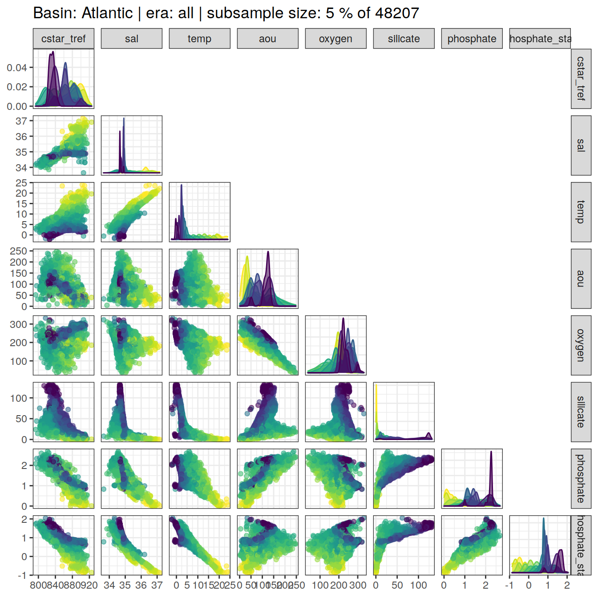
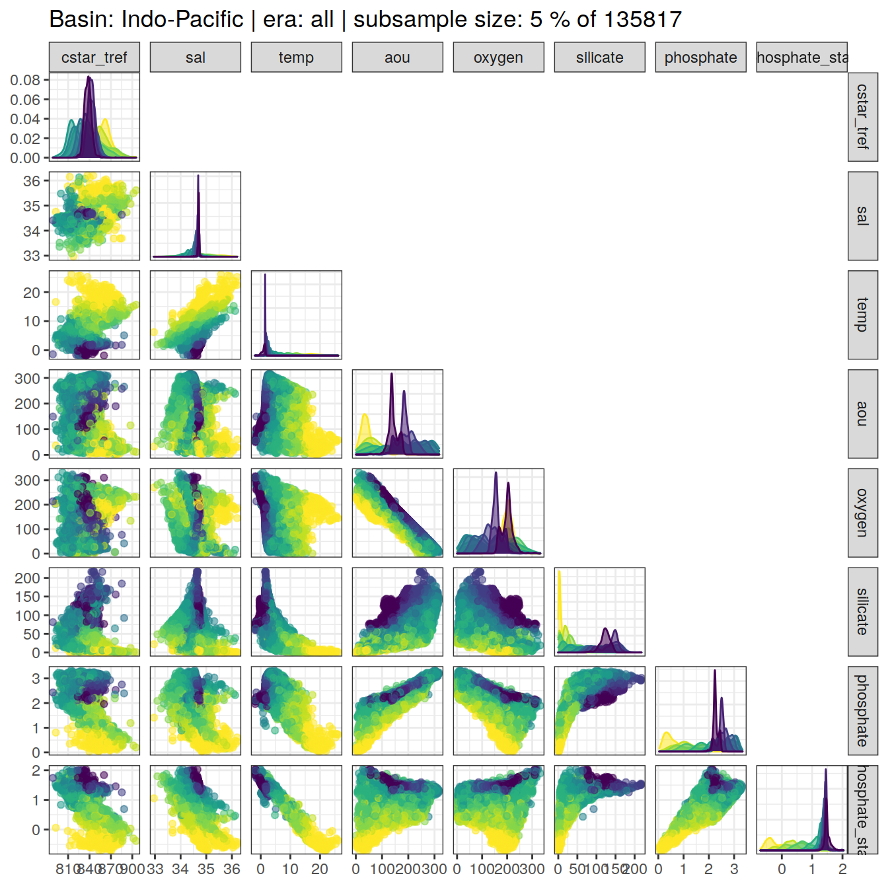
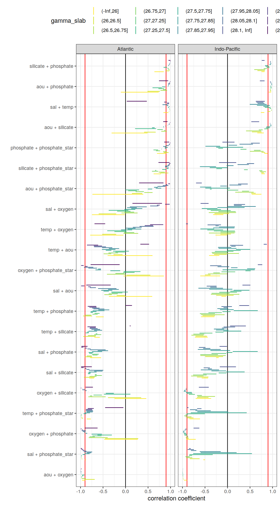
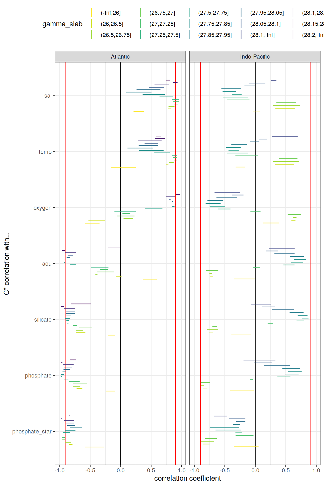

Last updated: 2020-12-23
Checks: 7 0
Knit directory: emlr_obs_v_101/
This reproducible R Markdown analysis was created with workflowr (version 1.6.2). The Checks tab describes the reproducibility checks that were applied when the results were created. The Past versions tab lists the development history.
Great! Since the R Markdown file has been committed to the Git repository, you know the exact version of the code that produced these results.
Great job! The global environment was empty. Objects defined in the global environment can affect the analysis in your R Markdown file in unknown ways. For reproduciblity it’s best to always run the code in an empty environment.
The command set.seed(20200707) was run prior to running the code in the R Markdown file. Setting a seed ensures that any results that rely on randomness, e.g. subsampling or permutations, are reproducible.
Great job! Recording the operating system, R version, and package versions is critical for reproducibility.
Nice! There were no cached chunks for this analysis, so you can be confident that you successfully produced the results during this run.
Great job! Using relative paths to the files within your workflowr project makes it easier to run your code on other machines.
Great! You are using Git for version control. Tracking code development and connecting the code version to the results is critical for reproducibility.
The results in this page were generated with repository version c003506. See the Past versions tab to see a history of the changes made to the R Markdown and HTML files.
Note that you need to be careful to ensure that all relevant files for the analysis have been committed to Git prior to generating the results (you can use wflow_publish or wflow_git_commit). workflowr only checks the R Markdown file, but you know if there are other scripts or data files that it depends on. Below is the status of the Git repository when the results were generated:
Ignored files:
Ignored: .Rproj.user/
Unstaged changes:
Modified: analysis/_site.yml
Modified: data/auxillary/params_local.rds
Note that any generated files, e.g. HTML, png, CSS, etc., are not included in this status report because it is ok for generated content to have uncommitted changes.
These are the previous versions of the repository in which changes were made to the R Markdown (analysis/eMLR_assumption_testing.Rmd) and HTML (docs/eMLR_assumption_testing.html) files. If you’ve configured a remote Git repository (see ?wflow_git_remote), click on the hyperlinks in the table below to view the files as they were in that past version.
| File | Version | Author | Date | Message |
|---|---|---|---|---|
| Rmd | 5a2f88c | Jens Müller | 2020-12-23 | Initial commit |
Required are:
GLODAP <-
read_csv(paste(path_version_data,
"GLODAPv2.2020_MLR_fitting_ready.csv",
sep = ""))The correlation between:
were investigated based on:
For an overview, a random subset of data from all eras was plotted separately for both basins, with color indicating neutral density slabs (high density = dark-purple color).
for (i_basin in unique(GLODAP$basin)) {
# i_basin <- unique(GLODAP$basin)[1]
print(
GLODAP %>%
filter(basin == i_basin) %>%
sample_frac(0.05) %>%
ggpairs(columns = c(params_local$MLR_target,
params_local$MLR_predictors),
upper = "blank",
ggplot2::aes(col = gamma_slab, fill = gamma_slab, alpha = 0.01)) +
scale_fill_viridis_d(direction = -1) +
scale_color_viridis_d(direction = -1) +
labs(title = paste("Basin:", i_basin ,"| era: all | subsample size: 5 % of",
nrow(GLODAP %>% filter(basin == i_basin))))
)
}
Individual correlation plots for each basin, era and neutral density (gamma) slab are available at:
/nfs/kryo/work/jenmueller/emlr_cant/observations/v_101/figures/Observations_correlation/
if (params_local$plot_all_figures == "y") {
for (i_basin in unique(GLODAP$basin)) {
for (i_era in unique(GLODAP$era)) {
# i_basin <- unique(GLODAP$basin)[1]
# i_era <- unique(GLODAP$era)[1]
GLODAP_basin_era <- GLODAP %>%
filter(basin == i_basin,
era == i_era)
for (i_gamma_slab in unique(GLODAP_basin_era$gamma_slab)) {
# i_gamma_slab <- unique(GLODAP_basin_era$gamma_slab)[5]
GLODAP_highlight <- GLODAP_basin_era %>%
mutate(gamma_highlight = if_else(gamma_slab == i_gamma_slab,
"in", "out")) %>%
arrange(desc(gamma_highlight))
p <- GLODAP_highlight %>%
ggpairs(
columns = c(params_local$MLR_target,
params_local$MLR_predictors),
ggplot2::aes(
col = gamma_highlight,
fill = gamma_highlight,
alpha = 0.01
)
) +
scale_fill_manual(values = c("red", "grey")) +
scale_color_manual(values = c("red", "grey")) +
labs(
title = paste(
i_era,
"|",
i_basin,
"| Gamma slab",
i_gamma_slab,
"| # obs total",
nrow(GLODAP_basin_era),
"| # obs slab",
nrow(GLODAP_highlight %>%
filter(gamma_highlight == "in"))
)
)
png(
filename = paste(
path_version_figures,
"Observations_correlation/",
paste(
"Predictor_correlation",
i_era,
i_basin,
i_gamma_slab,
".png",
sep = "_"
),
sep = ""),
width = 12,
height = 12,
units = "in",
res = 300
)
print(p)
dev.off()
}
}
}
}Correlation coefficients were calculated individually within each slabs, era and basin.
for (i_basin in unique(GLODAP$basin)) {
for (i_era in unique(GLODAP$era)) {
# i_basin <- unique(GLODAP$basin)[1]
# i_era <- unique(GLODAP$era)[1]
GLODAP_basin_era <- GLODAP %>%
filter(basin == i_basin,
era == i_era) %>%
select(basin,
era,
gamma_slab,
params_local$MLR_target,
params_local$MLR_predictors)
for (i_gamma_slab in unique(GLODAP_basin_era$gamma_slab)) {
# i_gamma_slab <- unique(GLODAP_basin_era$gamma_slab)[5]
print(i_gamma_slab)
GLODAP_basin_era_slab <- GLODAP_basin_era %>%
filter(gamma_slab == i_gamma_slab)
# calculate correlation table
cor_target_predictor_temp <- GLODAP_basin_era_slab %>%
select(-c(basin, era, gamma_slab)) %>%
correlate() %>%
focus(params_local$MLR_target) %>%
mutate(basin = i_basin,
era = i_era,
gamma_slab = i_gamma_slab)
if (exists("cor_target_predictor")) {
cor_target_predictor <-
bind_rows(cor_target_predictor, cor_target_predictor_temp)
}
if (!exists("cor_target_predictor")) {
cor_target_predictor <- cor_target_predictor_temp
}
cor_predictors_temp <- GLODAP_basin_era_slab %>%
select(-c(basin, era, gamma_slab)) %>%
correlate() %>%
shave %>%
stretch() %>%
filter(!is.na(r),
x != params_local$MLR_target,
y != params_local$MLR_target) %>%
mutate(pair = paste(x, y, sep = " + ")) %>%
select(-c(x, y)) %>%
mutate(basin = i_basin,
era = i_era,
gamma_slab = i_gamma_slab)
if (exists("cor_predictors")) {
cor_predictors <- bind_rows(cor_predictors, cor_predictors_temp)
}
if (!exists("cor_predictors")) {
cor_predictors <- cor_predictors_temp
}
}
}
}
rm(cor_predictors_temp, cor_target_predictor_temp,
i_gamma_slab, i_era, i_basin,
GLODAP_basin_era, GLODAP_basin_era_slab)Below, the range of correlations coefficients for each predictor pair is plotted per basin (facet) and density slab (color). Note that the range indicates the min and max values of in total 3 calculated coefficients (one per era).
# calculate min, max, mean across all eras
cor_predictors_stats <- cor_predictors %>%
group_by(pair, basin, gamma_slab) %>%
summarise(mean_r = mean(r),
min_r = min(r),
max_r = max(r)) %>%
ungroup()
# plot figure
cor_predictors_stats %>%
mutate(pair = reorder(pair, mean_r)) %>%
ggplot() +
geom_vline(xintercept = c(-0.9, 0.9), col = "red") +
geom_vline(xintercept = 0) +
geom_linerange(
aes(y = pair, xmin = min_r, xmax = max_r, col = gamma_slab),
position = position_dodge(width = 0.6)) +
facet_wrap(~basin) +
scale_color_viridis_d(direction = -1) +
labs(x = "correlation coefficient", y = "") +
theme(legend.position = "top")
# print table
kable(cor_predictors_stats) %>%
add_header_above() %>%
kable_styling() %>%
scroll_box(width = "100%", height = "400px")| pair | basin | gamma_slab | mean_r | min_r | max_r |
|---|---|---|---|---|---|
| aou + oxygen | Atlantic | (-Inf,26] | -0.9389502 | -0.9657252 | -0.8970975 |
| aou + oxygen | Atlantic | (26,26.5] | -0.8360182 | -0.9131173 | -0.6845952 |
| aou + oxygen | Atlantic | (26.5,26.75] | -0.9377591 | -0.9753126 | -0.8829909 |
| aou + oxygen | Atlantic | (26.75,27] | -0.9777145 | -0.9809730 | -0.9721422 |
| aou + oxygen | Atlantic | (27,27.25] | -0.9757569 | -0.9824182 | -0.9656962 |
| aou + oxygen | Atlantic | (27.25,27.5] | -0.9489897 | -0.9641478 | -0.9414056 |
| aou + oxygen | Atlantic | (27.5,27.75] | -0.9435586 | -0.9643373 | -0.9128399 |
| aou + oxygen | Atlantic | (27.75,27.85] | -0.9808314 | -0.9842699 | -0.9768423 |
| aou + oxygen | Atlantic | (27.85,27.95] | -0.9898141 | -0.9918705 | -0.9878269 |
| aou + oxygen | Atlantic | (27.95,28.05] | -0.9876667 | -0.9908193 | -0.9833655 |
| aou + oxygen | Atlantic | (28.05,28.1] | -0.9890602 | -0.9943380 | -0.9818869 |
| aou + oxygen | Atlantic | (28.1,28.15] | -0.9934305 | -0.9947591 | -0.9920879 |
| aou + oxygen | Atlantic | (28.15,28.2] | -0.9978117 | -0.9991819 | -0.9967919 |
| aou + oxygen | Atlantic | (28.2, Inf] | -0.9845283 | -0.9901176 | -0.9766795 |
| aou + oxygen | Indo-Pacific | (-Inf,26] | -0.9238212 | -0.9666316 | -0.8982902 |
| aou + oxygen | Indo-Pacific | (26,26.5] | -0.9817809 | -0.9864654 | -0.9742328 |
| aou + oxygen | Indo-Pacific | (26.5,26.75] | -0.9858407 | -0.9898397 | -0.9820756 |
| aou + oxygen | Indo-Pacific | (26.75,27] | -0.9843876 | -0.9865670 | -0.9831773 |
| aou + oxygen | Indo-Pacific | (27,27.25] | -0.9900695 | -0.9928636 | -0.9845851 |
| aou + oxygen | Indo-Pacific | (27.25,27.5] | -0.9920633 | -0.9952783 | -0.9860361 |
| aou + oxygen | Indo-Pacific | (27.5,27.75] | -0.9909420 | -0.9938691 | -0.9858888 |
| aou + oxygen | Indo-Pacific | (27.75,27.85] | -0.9960283 | -0.9989552 | -0.9921592 |
| aou + oxygen | Indo-Pacific | (27.85,27.95] | -0.9964876 | -0.9987361 | -0.9943586 |
| aou + oxygen | Indo-Pacific | (27.95,28.05] | -0.9947925 | -0.9959414 | -0.9933709 |
| aou + oxygen | Indo-Pacific | (28.05,28.1] | -0.9949676 | -0.9957943 | -0.9937126 |
| aou + oxygen | Indo-Pacific | (28.1, Inf] | -0.9912981 | -0.9926032 | -0.9887655 |
| aou + phosphate | Atlantic | (-Inf,26] | 0.3317032 | -0.1048818 | 0.7355403 |
| aou + phosphate | Atlantic | (26,26.5] | 0.6315110 | 0.4874965 | 0.7637700 |
| aou + phosphate | Atlantic | (26.5,26.75] | 0.8488387 | 0.7758983 | 0.9230705 |
| aou + phosphate | Atlantic | (26.75,27] | 0.8667323 | 0.8328482 | 0.8983819 |
| aou + phosphate | Atlantic | (27,27.25] | 0.8064878 | 0.7306781 | 0.8562723 |
| aou + phosphate | Atlantic | (27.25,27.5] | 0.6881203 | 0.5991714 | 0.8057302 |
| aou + phosphate | Atlantic | (27.5,27.75] | 0.8554994 | 0.8115775 | 0.8836553 |
| aou + phosphate | Atlantic | (27.75,27.85] | 0.9461773 | 0.9392379 | 0.9542636 |
| aou + phosphate | Atlantic | (27.85,27.95] | 0.9545391 | 0.9502098 | 0.9613666 |
| aou + phosphate | Atlantic | (27.95,28.05] | 0.9594731 | 0.9494508 | 0.9777716 |
| aou + phosphate | Atlantic | (28.05,28.1] | 0.9682265 | 0.9519000 | 0.9877039 |
| aou + phosphate | Atlantic | (28.1,28.15] | 0.9772524 | 0.9726537 | 0.9817345 |
| aou + phosphate | Atlantic | (28.15,28.2] | 0.9902671 | 0.9859210 | 0.9955354 |
| aou + phosphate | Atlantic | (28.2, Inf] | 0.8565984 | 0.7438163 | 0.9476150 |
| aou + phosphate | Indo-Pacific | (-Inf,26] | 0.9435330 | 0.9145022 | 0.9694283 |
| aou + phosphate | Indo-Pacific | (26,26.5] | 0.9568639 | 0.9499086 | 0.9677752 |
| aou + phosphate | Indo-Pacific | (26.5,26.75] | 0.9530302 | 0.9392830 | 0.9677092 |
| aou + phosphate | Indo-Pacific | (26.75,27] | 0.9515229 | 0.9463460 | 0.9544356 |
| aou + phosphate | Indo-Pacific | (27,27.25] | 0.9676912 | 0.9535866 | 0.9793907 |
| aou + phosphate | Indo-Pacific | (27.25,27.5] | 0.9674641 | 0.9548638 | 0.9787276 |
| aou + phosphate | Indo-Pacific | (27.5,27.75] | 0.9570026 | 0.9503344 | 0.9611454 |
| aou + phosphate | Indo-Pacific | (27.75,27.85] | 0.9822417 | 0.9737620 | 0.9883592 |
| aou + phosphate | Indo-Pacific | (27.85,27.95] | 0.9793550 | 0.9704627 | 0.9885139 |
| aou + phosphate | Indo-Pacific | (27.95,28.05] | 0.9651784 | 0.9559739 | 0.9731449 |
| aou + phosphate | Indo-Pacific | (28.05,28.1] | 0.9518650 | 0.9433504 | 0.9652123 |
| aou + phosphate | Indo-Pacific | (28.1, Inf] | 0.7712278 | 0.7189430 | 0.8228110 |
| aou + phosphate_star | Atlantic | (-Inf,26] | -0.2460877 | -0.7355700 | 0.3939762 |
| aou + phosphate_star | Atlantic | (26,26.5] | 0.2424880 | 0.1420441 | 0.3713176 |
| aou + phosphate_star | Atlantic | (26.5,26.75] | 0.4912758 | 0.4157044 | 0.6004859 |
| aou + phosphate_star | Atlantic | (26.75,27] | 0.2950009 | 0.2233788 | 0.4074414 |
| aou + phosphate_star | Atlantic | (27,27.25] | 0.1303867 | 0.0581933 | 0.2500732 |
| aou + phosphate_star | Atlantic | (27.25,27.5] | 0.1289073 | -0.0023567 | 0.3015684 |
| aou + phosphate_star | Atlantic | (27.5,27.75] | 0.5451331 | 0.4954786 | 0.5920806 |
| aou + phosphate_star | Atlantic | (27.75,27.85] | 0.7303436 | 0.6715435 | 0.7932960 |
| aou + phosphate_star | Atlantic | (27.85,27.95] | 0.6866583 | 0.6325665 | 0.7164765 |
| aou + phosphate_star | Atlantic | (27.95,28.05] | 0.7954151 | 0.7099073 | 0.8852417 |
| aou + phosphate_star | Atlantic | (28.05,28.1] | 0.8770156 | 0.8268936 | 0.9495480 |
| aou + phosphate_star | Atlantic | (28.1,28.15] | 0.9117297 | 0.8913701 | 0.9276523 |
| aou + phosphate_star | Atlantic | (28.15,28.2] | 0.9664411 | 0.9491438 | 0.9874975 |
| aou + phosphate_star | Atlantic | (28.2, Inf] | 0.6043404 | 0.3010540 | 0.8429139 |
| aou + phosphate_star | Indo-Pacific | (-Inf,26] | 0.6708078 | 0.5372381 | 0.7536901 |
| aou + phosphate_star | Indo-Pacific | (26,26.5] | 0.5912398 | 0.5249008 | 0.6257863 |
| aou + phosphate_star | Indo-Pacific | (26.5,26.75] | 0.4342622 | 0.1716756 | 0.5812990 |
| aou + phosphate_star | Indo-Pacific | (26.75,27] | 0.3853526 | 0.3227392 | 0.4779718 |
| aou + phosphate_star | Indo-Pacific | (27,27.25] | 0.1291488 | -0.0079048 | 0.2365882 |
| aou + phosphate_star | Indo-Pacific | (27.25,27.5] | -0.3746857 | -0.3908342 | -0.3525013 |
| aou + phosphate_star | Indo-Pacific | (27.5,27.75] | -0.2959328 | -0.4925319 | 0.0535206 |
| aou + phosphate_star | Indo-Pacific | (27.75,27.85] | -0.4781159 | -0.6103022 | -0.3617690 |
| aou + phosphate_star | Indo-Pacific | (27.85,27.95] | -0.0994319 | -0.1613967 | -0.0144182 |
| aou + phosphate_star | Indo-Pacific | (27.95,28.05] | 0.1761482 | 0.0420591 | 0.3047657 |
| aou + phosphate_star | Indo-Pacific | (28.05,28.1] | 0.3230965 | 0.2357009 | 0.4496122 |
| aou + phosphate_star | Indo-Pacific | (28.1, Inf] | -0.6419078 | -0.6985945 | -0.5711475 |
| aou + silicate | Atlantic | (-Inf,26] | 0.0903271 | -0.3102476 | 0.4890832 |
| aou + silicate | Atlantic | (26,26.5] | 0.5596204 | 0.4127796 | 0.6695838 |
| aou + silicate | Atlantic | (26.5,26.75] | 0.8633990 | 0.7936254 | 0.9171640 |
| aou + silicate | Atlantic | (26.75,27] | 0.8723389 | 0.8591711 | 0.8835132 |
| aou + silicate | Atlantic | (27,27.25] | 0.7469857 | 0.7051649 | 0.8265758 |
| aou + silicate | Atlantic | (27.25,27.5] | 0.4452791 | 0.2112045 | 0.6796763 |
| aou + silicate | Atlantic | (27.5,27.75] | 0.6218951 | 0.5887426 | 0.6462751 |
| aou + silicate | Atlantic | (27.75,27.85] | 0.8451206 | 0.8368905 | 0.8546967 |
| aou + silicate | Atlantic | (27.85,27.95] | 0.8921399 | 0.8848546 | 0.8974125 |
| aou + silicate | Atlantic | (27.95,28.05] | 0.9384863 | 0.9350173 | 0.9440566 |
| aou + silicate | Atlantic | (28.05,28.1] | 0.9689419 | 0.9594462 | 0.9805759 |
| aou + silicate | Atlantic | (28.1,28.15] | 0.9746219 | 0.9722693 | 0.9788870 |
| aou + silicate | Atlantic | (28.15,28.2] | 0.9916241 | 0.9882752 | 0.9948635 |
| aou + silicate | Atlantic | (28.2, Inf] | 0.8839264 | 0.8368495 | 0.9335909 |
| aou + silicate | Indo-Pacific | (-Inf,26] | 0.7348880 | 0.6617039 | 0.8057287 |
| aou + silicate | Indo-Pacific | (26,26.5] | 0.6579670 | 0.5424684 | 0.7555627 |
| aou + silicate | Indo-Pacific | (26.5,26.75] | 0.6191546 | 0.4118832 | 0.7454346 |
| aou + silicate | Indo-Pacific | (26.75,27] | 0.7502065 | 0.6949641 | 0.7818698 |
| aou + silicate | Indo-Pacific | (27,27.25] | 0.8669226 | 0.8160401 | 0.9081738 |
| aou + silicate | Indo-Pacific | (27.25,27.5] | 0.8994507 | 0.8529050 | 0.9375330 |
| aou + silicate | Indo-Pacific | (27.5,27.75] | 0.9188199 | 0.8639950 | 0.9508308 |
| aou + silicate | Indo-Pacific | (27.75,27.85] | 0.9669637 | 0.9517396 | 0.9760311 |
| aou + silicate | Indo-Pacific | (27.85,27.95] | 0.9632832 | 0.9535992 | 0.9700996 |
| aou + silicate | Indo-Pacific | (27.95,28.05] | 0.9478592 | 0.9411036 | 0.9521685 |
| aou + silicate | Indo-Pacific | (28.05,28.1] | 0.9463139 | 0.9453747 | 0.9476166 |
| aou + silicate | Indo-Pacific | (28.1, Inf] | 0.6394934 | 0.5282118 | 0.7032130 |
| oxygen + phosphate | Atlantic | (-Inf,26] | -0.1180622 | -0.4731505 | 0.2722375 |
| oxygen + phosphate | Atlantic | (26,26.5] | -0.1519035 | -0.4532626 | 0.2818635 |
| oxygen + phosphate | Atlantic | (26.5,26.75] | -0.6230958 | -0.8181860 | -0.3960109 |
| oxygen + phosphate | Atlantic | (26.75,27] | -0.7454732 | -0.7983435 | -0.6820919 |
| oxygen + phosphate | Atlantic | (27,27.25] | -0.6613373 | -0.7348958 | -0.5315984 |
| oxygen + phosphate | Atlantic | (27.25,27.5] | -0.4334469 | -0.6234279 | -0.3035186 |
| oxygen + phosphate | Atlantic | (27.5,27.75] | -0.6589445 | -0.7530629 | -0.5260944 |
| oxygen + phosphate | Atlantic | (27.75,27.85] | -0.8731499 | -0.8843678 | -0.8512896 |
| oxygen + phosphate | Atlantic | (27.85,27.95] | -0.9096479 | -0.9166822 | -0.8964010 |
| oxygen + phosphate | Atlantic | (27.95,28.05] | -0.9180301 | -0.9500827 | -0.8893231 |
| oxygen + phosphate | Atlantic | (28.05,28.1] | -0.9313832 | -0.9751089 | -0.8853188 |
| oxygen + phosphate | Atlantic | (28.1,28.15] | -0.9534248 | -0.9645073 | -0.9473987 |
| oxygen + phosphate | Atlantic | (28.15,28.2] | -0.9840743 | -0.9952143 | -0.9762524 |
| oxygen + phosphate | Atlantic | (28.2, Inf] | -0.7784879 | -0.9065604 | -0.6212009 |
| oxygen + phosphate | Indo-Pacific | (-Inf,26] | -0.7942415 | -0.9143341 | -0.7058457 |
| oxygen + phosphate | Indo-Pacific | (26,26.5] | -0.8909962 | -0.9195412 | -0.8615171 |
| oxygen + phosphate | Indo-Pacific | (26.5,26.75] | -0.8937334 | -0.9266387 | -0.8724917 |
| oxygen + phosphate | Indo-Pacific | (26.75,27] | -0.8869687 | -0.8972577 | -0.8753521 |
| oxygen + phosphate | Indo-Pacific | (27,27.25] | -0.9292968 | -0.9553954 | -0.8941804 |
| oxygen + phosphate | Indo-Pacific | (27.25,27.5] | -0.9428171 | -0.9632632 | -0.9049490 |
| oxygen + phosphate | Indo-Pacific | (27.5,27.75] | -0.9523314 | -0.9704432 | -0.9228285 |
| oxygen + phosphate | Indo-Pacific | (27.75,27.85] | -0.9751466 | -0.9887610 | -0.9590130 |
| oxygen + phosphate | Indo-Pacific | (27.85,27.95] | -0.9702058 | -0.9861014 | -0.9576509 |
| oxygen + phosphate | Indo-Pacific | (27.95,28.05] | -0.9423090 | -0.9531712 | -0.9300837 |
| oxygen + phosphate | Indo-Pacific | (28.05,28.1] | -0.9241443 | -0.9410138 | -0.9111405 |
| oxygen + phosphate | Indo-Pacific | (28.1, Inf] | -0.6938168 | -0.7539966 | -0.6260364 |
| oxygen + phosphate_star | Atlantic | (-Inf,26] | 0.4686105 | -0.0459767 | 0.8509875 |
| oxygen + phosphate_star | Atlantic | (26,26.5] | 0.2809574 | 0.0231108 | 0.5514585 |
| oxygen + phosphate_star | Atlantic | (26.5,26.75] | -0.1784706 | -0.4124853 | 0.0073868 |
| oxygen + phosphate_star | Atlantic | (26.75,27] | -0.0921314 | -0.2253028 | -0.0227334 |
| oxygen + phosphate_star | Atlantic | (27,27.25] | 0.0838019 | -0.0498005 | 0.2000546 |
| oxygen + phosphate_star | Atlantic | (27.25,27.5] | 0.1797152 | -0.0415384 | 0.3320953 |
| oxygen + phosphate_star | Atlantic | (27.5,27.75] | -0.2634024 | -0.3369832 | -0.1190064 |
| oxygen + phosphate_star | Atlantic | (27.75,27.85] | -0.5948513 | -0.6680682 | -0.5455289 |
| oxygen + phosphate_star | Atlantic | (27.85,27.95] | -0.5879494 | -0.6099347 | -0.5459706 |
| oxygen + phosphate_star | Atlantic | (27.95,28.05] | -0.7124997 | -0.8250832 | -0.6330465 |
| oxygen + phosphate_star | Atlantic | (28.05,28.1] | -0.8111476 | -0.9234186 | -0.7157828 |
| oxygen + phosphate_star | Atlantic | (28.1,28.15] | -0.8680579 | -0.8946390 | -0.8442065 |
| oxygen + phosphate_star | Atlantic | (28.15,28.2] | -0.9545689 | -0.9863946 | -0.9304829 |
| oxygen + phosphate_star | Atlantic | (28.2, Inf] | -0.4896282 | -0.7758158 | -0.1306473 |
| oxygen + phosphate_star | Indo-Pacific | (-Inf,26] | -0.3883186 | -0.6057011 | -0.1632440 |
| oxygen + phosphate_star | Indo-Pacific | (26,26.5] | -0.4383623 | -0.4987030 | -0.3777978 |
| oxygen + phosphate_star | Indo-Pacific | (26.5,26.75] | -0.2888259 | -0.4331798 | -0.0094271 |
| oxygen + phosphate_star | Indo-Pacific | (26.75,27] | -0.2241253 | -0.3150019 | -0.1705209 |
| oxygen + phosphate_star | Indo-Pacific | (27,27.25] | -0.0034090 | -0.1341532 | 0.1716023 |
| oxygen + phosphate_star | Indo-Pacific | (27.25,27.5] | 0.4573421 | 0.3988321 | 0.5139945 |
| oxygen + phosphate_star | Indo-Pacific | (27.5,27.75] | 0.3190753 | -0.1093957 | 0.6039328 |
| oxygen + phosphate_star | Indo-Pacific | (27.75,27.85] | 0.5182220 | 0.4359140 | 0.6142760 |
| oxygen + phosphate_star | Indo-Pacific | (27.85,27.95] | 0.1482256 | 0.0779244 | 0.2222978 |
| oxygen + phosphate_star | Indo-Pacific | (27.95,28.05] | -0.0946564 | -0.2211290 | 0.0368721 |
| oxygen + phosphate_star | Indo-Pacific | (28.05,28.1] | -0.2423012 | -0.3870374 | -0.1365073 |
| oxygen + phosphate_star | Indo-Pacific | (28.1, Inf] | 0.7277536 | 0.6734544 | 0.7719303 |
| oxygen + silicate | Atlantic | (-Inf,26] | 0.1202024 | -0.2444983 | 0.4602313 |
| oxygen + silicate | Atlantic | (26,26.5] | -0.1049409 | -0.3902021 | 0.3468966 |
| oxygen + silicate | Atlantic | (26.5,26.75] | -0.6634570 | -0.8265590 | -0.4421927 |
| oxygen + silicate | Atlantic | (26.75,27] | -0.7698460 | -0.7911150 | -0.7409356 |
| oxygen + silicate | Atlantic | (27,27.25] | -0.6040771 | -0.7115973 | -0.5246222 |
| oxygen + silicate | Atlantic | (27.25,27.5] | -0.1716476 | -0.4805685 | 0.1078637 |
| oxygen + silicate | Atlantic | (27.5,27.75] | -0.3733660 | -0.4374342 | -0.2608189 |
| oxygen + silicate | Atlantic | (27.75,27.85] | -0.7419085 | -0.7430082 | -0.7412516 |
| oxygen + silicate | Atlantic | (27.85,27.95] | -0.8267357 | -0.8274812 | -0.8253685 |
| oxygen + silicate | Atlantic | (27.95,28.05] | -0.8802818 | -0.8909635 | -0.8637218 |
| oxygen + silicate | Atlantic | (28.05,28.1] | -0.9272160 | -0.9585445 | -0.8947472 |
| oxygen + silicate | Atlantic | (28.1,28.15] | -0.9478923 | -0.9515429 | -0.9436355 |
| oxygen + silicate | Atlantic | (28.15,28.2] | -0.9861183 | -0.9937811 | -0.9814866 |
| oxygen + silicate | Atlantic | (28.2, Inf] | -0.8089470 | -0.8881395 | -0.7245573 |
| oxygen + silicate | Indo-Pacific | (-Inf,26] | -0.5117105 | -0.7069386 | -0.3634524 |
| oxygen + silicate | Indo-Pacific | (26,26.5] | -0.5457463 | -0.6779649 | -0.4227345 |
| oxygen + silicate | Indo-Pacific | (26.5,26.75] | -0.5054302 | -0.6661898 | -0.2768715 |
| oxygen + silicate | Indo-Pacific | (26.75,27] | -0.6402060 | -0.6778593 | -0.5698928 |
| oxygen + silicate | Indo-Pacific | (27,27.25] | -0.8025389 | -0.8600129 | -0.7239632 |
| oxygen + silicate | Indo-Pacific | (27.25,27.5] | -0.8530180 | -0.9068529 | -0.7815304 |
| oxygen + silicate | Indo-Pacific | (27.5,27.75] | -0.8758397 | -0.9221031 | -0.7931034 |
| oxygen + silicate | Indo-Pacific | (27.75,27.85] | -0.9517055 | -0.9720489 | -0.9228307 |
| oxygen + silicate | Indo-Pacific | (27.85,27.95] | -0.9478410 | -0.9631354 | -0.9309988 |
| oxygen + silicate | Indo-Pacific | (27.95,28.05] | -0.9212049 | -0.9291327 | -0.9098613 |
| oxygen + silicate | Indo-Pacific | (28.05,28.1] | -0.9200247 | -0.9227179 | -0.9159990 |
| oxygen + silicate | Indo-Pacific | (28.1, Inf] | -0.5552640 | -0.6359927 | -0.4165687 |
| phosphate + phosphate_star | Atlantic | (-Inf,26] | 0.7788908 | 0.6978481 | 0.9018039 |
| phosphate + phosphate_star | Atlantic | (26,26.5] | 0.8945924 | 0.8472981 | 0.9558152 |
| phosphate + phosphate_star | Atlantic | (26.5,26.75] | 0.8703408 | 0.8344749 | 0.9152955 |
| phosphate + phosphate_star | Atlantic | (26.75,27] | 0.7296455 | 0.6757646 | 0.7665880 |
| phosphate + phosphate_star | Atlantic | (27,27.25] | 0.6859507 | 0.6203899 | 0.7235256 |
| phosphate + phosphate_star | Atlantic | (27.25,27.5] | 0.8035948 | 0.7979516 | 0.8071022 |
| phosphate + phosphate_star | Atlantic | (27.5,27.75] | 0.8961359 | 0.8718007 | 0.9096158 |
| phosphate + phosphate_star | Atlantic | (27.75,27.85] | 0.9097440 | 0.8742603 | 0.9381570 |
| phosphate + phosphate_star | Atlantic | (27.85,27.95] | 0.8696966 | 0.8364084 | 0.8968879 |
| phosphate + phosphate_star | Atlantic | (27.95,28.05] | 0.9306063 | 0.8919104 | 0.9601798 |
| phosphate + phosphate_star | Atlantic | (28.05,28.1] | 0.9676860 | 0.9584054 | 0.9855311 |
| phosphate + phosphate_star | Atlantic | (28.1,28.15] | 0.9772791 | 0.9713558 | 0.9808635 |
| phosphate + phosphate_star | Atlantic | (28.15,28.2] | 0.9923030 | 0.9877477 | 0.9977381 |
| phosphate + phosphate_star | Atlantic | (28.2, Inf] | 0.9231674 | 0.8580928 | 0.9696368 |
| phosphate + phosphate_star | Indo-Pacific | (-Inf,26] | 0.8620492 | 0.8140885 | 0.8960219 |
| phosphate + phosphate_star | Indo-Pacific | (26,26.5] | 0.7963282 | 0.7556306 | 0.8341397 |
| phosphate + phosphate_star | Indo-Pacific | (26.5,26.75] | 0.6792232 | 0.4968324 | 0.8005867 |
| phosphate + phosphate_star | Indo-Pacific | (26.75,27] | 0.6466050 | 0.5880421 | 0.7346097 |
| phosphate + phosphate_star | Indo-Pacific | (27,27.25] | 0.3661921 | 0.2876223 | 0.4208293 |
| phosphate + phosphate_star | Indo-Pacific | (27.25,27.5] | -0.1436169 | -0.2037601 | -0.1001306 |
| phosphate + phosphate_star | Indo-Pacific | (27.5,27.75] | -0.0378472 | -0.2502995 | 0.3460437 |
| phosphate + phosphate_star | Indo-Pacific | (27.75,27.85] | -0.3213900 | -0.4893993 | -0.1630244 |
| phosphate + phosphate_star | Indo-Pacific | (27.85,27.95] | 0.0894520 | 0.0219552 | 0.2124320 |
| phosphate + phosphate_star | Indo-Pacific | (27.95,28.05] | 0.4181105 | 0.2670801 | 0.5639223 |
| phosphate + phosphate_star | Indo-Pacific | (28.05,28.1] | 0.5907431 | 0.5226614 | 0.7169523 |
| phosphate + phosphate_star | Indo-Pacific | (28.1, Inf] | -0.0155035 | -0.1130051 | 0.1548391 |
| sal + aou | Atlantic | (-Inf,26] | 0.1921616 | -0.3694296 | 0.5930042 |
| sal + aou | Atlantic | (26,26.5] | -0.1220180 | -0.1961770 | -0.0131913 |
| sal + aou | Atlantic | (26.5,26.75] | -0.3871627 | -0.4715909 | -0.3058542 |
| sal + aou | Atlantic | (26.75,27] | -0.2514044 | -0.3742990 | -0.1717234 |
| sal + aou | Atlantic | (27,27.25] | -0.1488597 | -0.3046447 | -0.0699471 |
| sal + aou | Atlantic | (27.25,27.5] | -0.1205323 | -0.3190981 | 0.0512310 |
| sal + aou | Atlantic | (27.5,27.75] | -0.4223989 | -0.4875574 | -0.3703009 |
| sal + aou | Atlantic | (27.75,27.85] | -0.4381373 | -0.5388152 | -0.2944576 |
| sal + aou | Atlantic | (27.85,27.95] | -0.2672054 | -0.3873018 | -0.1500396 |
| sal + aou | Atlantic | (27.95,28.05] | -0.4547892 | -0.6103318 | -0.2018646 |
| sal + aou | Atlantic | (28.05,28.1] | -0.7124559 | -0.7907090 | -0.6576400 |
| sal + aou | Atlantic | (28.1,28.15] | -0.8072576 | -0.8296179 | -0.7715125 |
| sal + aou | Atlantic | (28.15,28.2] | -0.9402854 | -0.9862033 | -0.9121822 |
| sal + aou | Atlantic | (28.2, Inf] | -0.6362345 | -0.8727438 | -0.3295380 |
| sal + aou | Indo-Pacific | (-Inf,26] | -0.0984770 | -0.1345739 | -0.0329716 |
| sal + aou | Indo-Pacific | (26,26.5] | -0.0480704 | -0.2491891 | 0.1357690 |
| sal + aou | Indo-Pacific | (26.5,26.75] | -0.0584245 | -0.3686784 | 0.2627874 |
| sal + aou | Indo-Pacific | (26.75,27] | -0.1499109 | -0.3537033 | 0.0426278 |
| sal + aou | Indo-Pacific | (27,27.25] | -0.0507031 | -0.1828172 | 0.2100629 |
| sal + aou | Indo-Pacific | (27.25,27.5] | 0.1475752 | 0.0626313 | 0.3094319 |
| sal + aou | Indo-Pacific | (27.5,27.75] | 0.2933998 | 0.1363646 | 0.4868631 |
| sal + aou | Indo-Pacific | (27.75,27.85] | -0.1542083 | -0.4054830 | 0.1085649 |
| sal + aou | Indo-Pacific | (27.85,27.95] | -0.3320042 | -0.6465806 | -0.1009388 |
| sal + aou | Indo-Pacific | (27.95,28.05] | -0.3151896 | -0.3833562 | -0.2407034 |
| sal + aou | Indo-Pacific | (28.05,28.1] | -0.3702818 | -0.4620065 | -0.2438623 |
| sal + aou | Indo-Pacific | (28.1, Inf] | 0.4439310 | 0.3317368 | 0.5082620 |
| sal + oxygen | Atlantic | (-Inf,26] | -0.4557058 | -0.7457922 | -0.0164741 |
| sal + oxygen | Atlantic | (26,26.5] | -0.3982718 | -0.5959675 | -0.2067727 |
| sal + oxygen | Atlantic | (26.5,26.75] | 0.0636523 | -0.0898030 | 0.2681596 |
| sal + oxygen | Atlantic | (26.75,27] | 0.0482021 | -0.0228657 | 0.1902757 |
| sal + oxygen | Atlantic | (27,27.25] | -0.0624357 | -0.1866148 | 0.1097139 |
| sal + oxygen | Atlantic | (27.25,27.5] | -0.1832739 | -0.3743418 | 0.0632251 |
| sal + oxygen | Atlantic | (27.5,27.75] | 0.1194131 | -0.0251887 | 0.2160439 |
| sal + oxygen | Atlantic | (27.75,27.85] | 0.2627111 | 0.1270993 | 0.3721056 |
| sal + oxygen | Atlantic | (27.85,27.95] | 0.1395539 | 0.0353047 | 0.2494907 |
| sal + oxygen | Atlantic | (27.95,28.05] | 0.3376128 | 0.0961565 | 0.4718071 |
| sal + oxygen | Atlantic | (28.05,28.1] | 0.6121041 | 0.5457875 | 0.7300555 |
| sal + oxygen | Atlantic | (28.1,28.15] | 0.7376211 | 0.6970833 | 0.7602800 |
| sal + oxygen | Atlantic | (28.15,28.2] | 0.9179508 | 0.8787642 | 0.9797626 |
| sal + oxygen | Atlantic | (28.2, Inf] | 0.5231240 | 0.1530891 | 0.8087762 |
| sal + oxygen | Indo-Pacific | (-Inf,26] | -0.2069805 | -0.3204891 | -0.0926156 |
| sal + oxygen | Indo-Pacific | (26,26.5] | -0.1264034 | -0.2891051 | 0.0358443 |
| sal + oxygen | Indo-Pacific | (26.5,26.75] | -0.0986103 | -0.4160227 | 0.1903447 |
| sal + oxygen | Indo-Pacific | (26.75,27] | -0.0193301 | -0.2009969 | 0.1810538 |
| sal + oxygen | Indo-Pacific | (27,27.25] | -0.0784090 | -0.3721506 | 0.0711828 |
| sal + oxygen | Indo-Pacific | (27.25,27.5] | -0.2517231 | -0.4544548 | -0.1459357 |
| sal + oxygen | Indo-Pacific | (27.5,27.75] | -0.3977916 | -0.5707352 | -0.2231574 |
| sal + oxygen | Indo-Pacific | (27.75,27.85] | 0.0845212 | -0.2240718 | 0.3782023 |
| sal + oxygen | Indo-Pacific | (27.85,27.95] | 0.2712101 | 0.0073449 | 0.6274307 |
| sal + oxygen | Indo-Pacific | (27.95,28.05] | 0.2333908 | 0.1431014 | 0.3158692 |
| sal + oxygen | Indo-Pacific | (28.05,28.1] | 0.2843239 | 0.1410946 | 0.3893238 |
| sal + oxygen | Indo-Pacific | (28.1, Inf] | -0.5337129 | -0.5982580 | -0.4204154 |
| sal + phosphate | Atlantic | (-Inf,26] | -0.6718104 | -0.7883166 | -0.5439051 |
| sal + phosphate | Atlantic | (26,26.5] | -0.8045003 | -0.9095806 | -0.7450023 |
| sal + phosphate | Atlantic | (26.5,26.75] | -0.7926661 | -0.8602353 | -0.7531993 |
| sal + phosphate | Atlantic | (26.75,27] | -0.6870682 | -0.7321176 | -0.6230247 |
| sal + phosphate | Atlantic | (27,27.25] | -0.6861105 | -0.7448984 | -0.5948976 |
| sal + phosphate | Atlantic | (27.25,27.5] | -0.7809899 | -0.8078339 | -0.7404661 |
| sal + phosphate | Atlantic | (27.5,27.75] | -0.7735140 | -0.8199123 | -0.7157270 |
| sal + phosphate | Atlantic | (27.75,27.85] | -0.6587212 | -0.7426762 | -0.5194661 |
| sal + phosphate | Atlantic | (27.85,27.95] | -0.4991425 | -0.6179318 | -0.3880883 |
| sal + phosphate | Atlantic | (27.95,28.05] | -0.6286530 | -0.7883467 | -0.4428745 |
| sal + phosphate | Atlantic | (28.05,28.1] | -0.8171511 | -0.8460020 | -0.7737693 |
| sal + phosphate | Atlantic | (28.1,28.15] | -0.8809246 | -0.9075550 | -0.8579318 |
| sal + phosphate | Atlantic | (28.15,28.2] | -0.9567895 | -0.9837386 | -0.9343739 |
| sal + phosphate | Atlantic | (28.2, Inf] | -0.9236599 | -0.9784209 | -0.8449040 |
| sal + phosphate | Indo-Pacific | (-Inf,26] | -0.2163423 | -0.2516803 | -0.1963576 |
| sal + phosphate | Indo-Pacific | (26,26.5] | -0.2742401 | -0.4946484 | -0.0982209 |
| sal + phosphate | Indo-Pacific | (26.5,26.75] | -0.3056216 | -0.6033862 | -0.0398029 |
| sal + phosphate | Indo-Pacific | (26.75,27] | -0.4009651 | -0.6052432 | -0.2117695 |
| sal + phosphate | Indo-Pacific | (27,27.25] | -0.2272426 | -0.3554287 | -0.0268750 |
| sal + phosphate | Indo-Pacific | (27.25,27.5] | 0.0517207 | -0.0196600 | 0.1072404 |
| sal + phosphate | Indo-Pacific | (27.5,27.75] | 0.3285766 | 0.1167065 | 0.6704141 |
| sal + phosphate | Indo-Pacific | (27.75,27.85] | -0.1791221 | -0.3796819 | 0.0574807 |
| sal + phosphate | Indo-Pacific | (27.85,27.95] | -0.3850535 | -0.6593256 | -0.1509621 |
| sal + phosphate | Indo-Pacific | (27.95,28.05] | -0.4706407 | -0.5406220 | -0.3818615 |
| sal + phosphate | Indo-Pacific | (28.05,28.1] | -0.5616903 | -0.6349339 | -0.4892787 |
| sal + phosphate | Indo-Pacific | (28.1, Inf] | -0.0967475 | -0.1766772 | -0.0119520 |
| sal + phosphate_star | Atlantic | (-Inf,26] | -0.8923607 | -0.9019509 | -0.8783904 |
| sal + phosphate_star | Atlantic | (26,26.5] | -0.9667616 | -0.9734383 | -0.9610662 |
| sal + phosphate_star | Atlantic | (26.5,26.75] | -0.9765860 | -0.9791974 | -0.9743700 |
| sal + phosphate_star | Atlantic | (26.75,27] | -0.9815854 | -0.9860305 | -0.9771447 |
| sal + phosphate_star | Atlantic | (27,27.25] | -0.9803406 | -0.9837379 | -0.9740098 |
| sal + phosphate_star | Atlantic | (27.25,27.5] | -0.9788386 | -0.9845589 | -0.9698160 |
| sal + phosphate_star | Atlantic | (27.5,27.75] | -0.9272507 | -0.9522447 | -0.9006403 |
| sal + phosphate_star | Atlantic | (27.75,27.85] | -0.8679496 | -0.9078986 | -0.7986226 |
| sal + phosphate_star | Atlantic | (27.85,27.95] | -0.8107909 | -0.8579622 | -0.7616291 |
| sal + phosphate_star | Atlantic | (27.95,28.05] | -0.8134209 | -0.9122772 | -0.7406612 |
| sal + phosphate_star | Atlantic | (28.05,28.1] | -0.8957518 | -0.9355347 | -0.8702105 |
| sal + phosphate_star | Atlantic | (28.1,28.15] | -0.9329227 | -0.9556798 | -0.9192749 |
| sal + phosphate_star | Atlantic | (28.15,28.2] | -0.9659806 | -0.9810099 | -0.9470010 |
| sal + phosphate_star | Atlantic | (28.2, Inf] | -0.9817267 | -0.9940342 | -0.9686091 |
| sal + phosphate_star | Indo-Pacific | (-Inf,26] | -0.5137690 | -0.5362269 | -0.4998734 |
| sal + phosphate_star | Indo-Pacific | (26,26.5] | -0.7186946 | -0.8365987 | -0.6199067 |
| sal + phosphate_star | Indo-Pacific | (26.5,26.75] | -0.8399392 | -0.9179056 | -0.7815656 |
| sal + phosphate_star | Indo-Pacific | (26.75,27] | -0.8884882 | -0.9340247 | -0.8408479 |
| sal + phosphate_star | Indo-Pacific | (27,27.25] | -0.8309913 | -0.8552501 | -0.7860536 |
| sal + phosphate_star | Indo-Pacific | (27.25,27.5] | -0.5904717 | -0.8464485 | -0.3279334 |
| sal + phosphate_star | Indo-Pacific | (27.5,27.75] | -0.1259938 | -0.7625607 | 0.5424783 |
| sal + phosphate_star | Indo-Pacific | (27.75,27.85] | -0.2766548 | -0.5976173 | 0.2020765 |
| sal + phosphate_star | Indo-Pacific | (27.85,27.95] | -0.4219847 | -0.6169194 | -0.1512579 |
| sal + phosphate_star | Indo-Pacific | (27.95,28.05] | -0.7611150 | -0.8113948 | -0.6920726 |
| sal + phosphate_star | Indo-Pacific | (28.05,28.1] | -0.8299200 | -0.8864012 | -0.7470368 |
| sal + phosphate_star | Indo-Pacific | (28.1, Inf] | -0.8321339 | -0.8542750 | -0.8174545 |
| sal + silicate | Atlantic | (-Inf,26] | -0.7534280 | -0.8058273 | -0.7000186 |
| sal + silicate | Atlantic | (26,26.5] | -0.7678695 | -0.9240850 | -0.6852794 |
| sal + silicate | Atlantic | (26.5,26.75] | -0.7161006 | -0.8016653 | -0.6451069 |
| sal + silicate | Atlantic | (26.75,27] | -0.5876240 | -0.6816627 | -0.5251128 |
| sal + silicate | Atlantic | (27,27.25] | -0.6557494 | -0.6806286 | -0.6422957 |
| sal + silicate | Atlantic | (27.25,27.5] | -0.8081319 | -0.8356302 | -0.7825646 |
| sal + silicate | Atlantic | (27.5,27.75] | -0.8062825 | -0.8279787 | -0.7756647 |
| sal + silicate | Atlantic | (27.75,27.85] | -0.7394929 | -0.8152687 | -0.6432977 |
| sal + silicate | Atlantic | (27.85,27.95] | -0.6070553 | -0.6958519 | -0.5118058 |
| sal + silicate | Atlantic | (27.95,28.05] | -0.6821920 | -0.8129530 | -0.4927370 |
| sal + silicate | Atlantic | (28.05,28.1] | -0.8377450 | -0.8698511 | -0.8034431 |
| sal + silicate | Atlantic | (28.1,28.15] | -0.8911496 | -0.9052288 | -0.8690187 |
| sal + silicate | Atlantic | (28.15,28.2] | -0.9502797 | -0.9852079 | -0.9296085 |
| sal + silicate | Atlantic | (28.2, Inf] | -0.8837899 | -0.9859207 | -0.7496524 |
| sal + silicate | Indo-Pacific | (-Inf,26] | -0.5232660 | -0.5733684 | -0.4325508 |
| sal + silicate | Indo-Pacific | (26,26.5] | -0.5478226 | -0.6781462 | -0.4242126 |
| sal + silicate | Indo-Pacific | (26.5,26.75] | -0.6592217 | -0.8095321 | -0.5303690 |
| sal + silicate | Indo-Pacific | (26.75,27] | -0.6515400 | -0.7643626 | -0.4625367 |
| sal + silicate | Indo-Pacific | (27,27.25] | -0.4316583 | -0.5432431 | -0.2473487 |
| sal + silicate | Indo-Pacific | (27.25,27.5] | -0.1282618 | -0.1955960 | -0.0259393 |
| sal + silicate | Indo-Pacific | (27.5,27.75] | 0.1295001 | -0.0264336 | 0.3801137 |
| sal + silicate | Indo-Pacific | (27.75,27.85] | -0.2039750 | -0.3569810 | -0.0307998 |
| sal + silicate | Indo-Pacific | (27.85,27.95] | -0.3644830 | -0.5928732 | -0.1885610 |
| sal + silicate | Indo-Pacific | (27.95,28.05] | -0.3941642 | -0.4335481 | -0.3463783 |
| sal + silicate | Indo-Pacific | (28.05,28.1] | -0.4828938 | -0.5294174 | -0.3926515 |
| sal + silicate | Indo-Pacific | (28.1, Inf] | -0.0014036 | -0.1709013 | 0.1875472 |
| sal + temp | Atlantic | (-Inf,26] | 0.8853331 | 0.8422006 | 0.9503932 |
| sal + temp | Atlantic | (26,26.5] | 0.9673658 | 0.9617130 | 0.9710383 |
| sal + temp | Atlantic | (26.5,26.75] | 0.9892383 | 0.9881489 | 0.9899162 |
| sal + temp | Atlantic | (26.75,27] | 0.9818076 | 0.9779495 | 0.9841068 |
| sal + temp | Atlantic | (27,27.25] | 0.9755143 | 0.9726387 | 0.9805185 |
| sal + temp | Atlantic | (27.25,27.5] | 0.9717680 | 0.9677458 | 0.9742289 |
| sal + temp | Atlantic | (27.5,27.75] | 0.9534283 | 0.9419362 | 0.9643692 |
| sal + temp | Atlantic | (27.75,27.85] | 0.9729132 | 0.9634813 | 0.9782359 |
| sal + temp | Atlantic | (27.85,27.95] | 0.9319814 | 0.9150083 | 0.9496234 |
| sal + temp | Atlantic | (27.95,28.05] | 0.8745329 | 0.8210664 | 0.9289758 |
| sal + temp | Atlantic | (28.05,28.1] | 0.9492583 | 0.9205467 | 0.9671969 |
| sal + temp | Atlantic | (28.1,28.15] | 0.9395632 | 0.9229268 | 0.9666057 |
| sal + temp | Atlantic | (28.15,28.2] | 0.8875836 | 0.8562669 | 0.9161473 |
| sal + temp | Atlantic | (28.2, Inf] | 0.2238380 | 0.0276649 | 0.4728163 |
| sal + temp | Indo-Pacific | (-Inf,26] | 0.7705511 | 0.7410599 | 0.8176998 |
| sal + temp | Indo-Pacific | (26,26.5] | 0.9274472 | 0.8850281 | 0.9497692 |
| sal + temp | Indo-Pacific | (26.5,26.75] | 0.9776627 | 0.9690892 | 0.9833143 |
| sal + temp | Indo-Pacific | (26.75,27] | 0.9765883 | 0.9720311 | 0.9798842 |
| sal + temp | Indo-Pacific | (27,27.25] | 0.9494460 | 0.9325993 | 0.9690398 |
| sal + temp | Indo-Pacific | (27.25,27.5] | 0.8798656 | 0.8284848 | 0.9548892 |
| sal + temp | Indo-Pacific | (27.5,27.75] | 0.8625722 | 0.7971350 | 0.9116605 |
| sal + temp | Indo-Pacific | (27.75,27.85] | 0.8130809 | 0.6543779 | 0.9383333 |
| sal + temp | Indo-Pacific | (27.85,27.95] | 0.7200470 | 0.4942660 | 0.8702427 |
| sal + temp | Indo-Pacific | (27.95,28.05] | 0.7456435 | 0.6679011 | 0.8213635 |
| sal + temp | Indo-Pacific | (28.05,28.1] | 0.7338360 | 0.6429994 | 0.7974888 |
| sal + temp | Indo-Pacific | (28.1, Inf] | 0.7310847 | 0.6282610 | 0.8285440 |
| silicate + phosphate | Atlantic | (-Inf,26] | 0.7241349 | 0.6407045 | 0.8486212 |
| silicate + phosphate | Atlantic | (26,26.5] | 0.9251959 | 0.8853604 | 0.9718057 |
| silicate + phosphate | Atlantic | (26.5,26.75] | 0.9699994 | 0.9624900 | 0.9800803 |
| silicate + phosphate | Atlantic | (26.75,27] | 0.9552801 | 0.9387213 | 0.9698408 |
| silicate + phosphate | Atlantic | (27,27.25] | 0.9404254 | 0.9322815 | 0.9513836 |
| silicate + phosphate | Atlantic | (27.25,27.5] | 0.8880399 | 0.8453595 | 0.9208599 |
| silicate + phosphate | Atlantic | (27.5,27.75] | 0.8926008 | 0.8910343 | 0.8947287 |
| silicate + phosphate | Atlantic | (27.75,27.85] | 0.9516758 | 0.9448944 | 0.9616456 |
| silicate + phosphate | Atlantic | (27.85,27.95] | 0.9685935 | 0.9616406 | 0.9780153 |
| silicate + phosphate | Atlantic | (27.95,28.05] | 0.9780987 | 0.9712925 | 0.9862116 |
| silicate + phosphate | Atlantic | (28.05,28.1] | 0.9882671 | 0.9848359 | 0.9908495 |
| silicate + phosphate | Atlantic | (28.1,28.15] | 0.9929162 | 0.9915607 | 0.9937258 |
| silicate + phosphate | Atlantic | (28.15,28.2] | 0.9941076 | 0.9914086 | 0.9983927 |
| silicate + phosphate | Atlantic | (28.2, Inf] | 0.9776387 | 0.9534028 | 0.9966812 |
| silicate + phosphate | Indo-Pacific | (-Inf,26] | 0.7966457 | 0.7549282 | 0.8242567 |
| silicate + phosphate | Indo-Pacific | (26,26.5] | 0.7594681 | 0.6646845 | 0.8290237 |
| silicate + phosphate | Indo-Pacific | (26.5,26.75] | 0.7510532 | 0.5936836 | 0.8360064 |
| silicate + phosphate | Indo-Pacific | (26.75,27] | 0.8508647 | 0.8043755 | 0.8760636 |
| silicate + phosphate | Indo-Pacific | (27,27.25] | 0.8972288 | 0.8706069 | 0.9329414 |
| silicate + phosphate | Indo-Pacific | (27.25,27.5] | 0.8794949 | 0.8459952 | 0.9261101 |
| silicate + phosphate | Indo-Pacific | (27.5,27.75] | 0.8643741 | 0.8342293 | 0.8984859 |
| silicate + phosphate | Indo-Pacific | (27.75,27.85] | 0.9510943 | 0.9309524 | 0.9641692 |
| silicate + phosphate | Indo-Pacific | (27.85,27.95] | 0.9642005 | 0.9510316 | 0.9716635 |
| silicate + phosphate | Indo-Pacific | (27.95,28.05] | 0.9589421 | 0.9491511 | 0.9641228 |
| silicate + phosphate | Indo-Pacific | (28.05,28.1] | 0.9557187 | 0.9481518 | 0.9623277 |
| silicate + phosphate | Indo-Pacific | (28.1, Inf] | 0.7895184 | 0.7603903 | 0.8226709 |
| silicate + phosphate_star | Atlantic | (-Inf,26] | 0.6881175 | 0.6232995 | 0.7864446 |
| silicate + phosphate_star | Atlantic | (26,26.5] | 0.8364155 | 0.7724158 | 0.9512271 |
| silicate + phosphate_star | Atlantic | (26.5,26.75] | 0.8041066 | 0.7367308 | 0.8733455 |
| silicate + phosphate_star | Atlantic | (26.75,27] | 0.6403621 | 0.5863116 | 0.7255021 |
| silicate + phosphate_star | Atlantic | (27,27.25] | 0.6688120 | 0.6570413 | 0.6830004 |
| silicate + phosphate_star | Atlantic | (27.25,27.5] | 0.8552159 | 0.8138476 | 0.9050908 |
| silicate + phosphate_star | Atlantic | (27.5,27.75] | 0.9313224 | 0.9154545 | 0.9521441 |
| silicate + phosphate_star | Atlantic | (27.75,27.85] | 0.9416349 | 0.9280612 | 0.9564611 |
| silicate + phosphate_star | Atlantic | (27.85,27.95] | 0.9073025 | 0.8770156 | 0.9283813 |
| silicate + phosphate_star | Atlantic | (27.95,28.05] | 0.9257504 | 0.8793745 | 0.9611313 |
| silicate + phosphate_star | Atlantic | (28.05,28.1] | 0.9519519 | 0.9376264 | 0.9793537 |
| silicate + phosphate_star | Atlantic | (28.1,28.15] | 0.9697809 | 0.9600160 | 0.9820511 |
| silicate + phosphate_star | Atlantic | (28.15,28.2] | 0.9810187 | 0.9713310 | 0.9960199 |
| silicate + phosphate_star | Atlantic | (28.2, Inf] | 0.8735954 | 0.7314156 | 0.9753485 |
| silicate + phosphate_star | Indo-Pacific | (-Inf,26] | 0.7876554 | 0.7534664 | 0.8317989 |
| silicate + phosphate_star | Indo-Pacific | (26,26.5] | 0.7821132 | 0.7486813 | 0.8060754 |
| silicate + phosphate_star | Indo-Pacific | (26.5,26.75] | 0.7966947 | 0.7231974 | 0.8540226 |
| silicate + phosphate_star | Indo-Pacific | (26.75,27] | 0.7414473 | 0.7046507 | 0.7754751 |
| silicate + phosphate_star | Indo-Pacific | (27,27.25] | 0.4073766 | 0.3670285 | 0.4501844 |
| silicate + phosphate_star | Indo-Pacific | (27.25,27.5] | -0.2040546 | -0.2476339 | -0.1220001 |
| silicate + phosphate_star | Indo-Pacific | (27.5,27.75] | -0.2213846 | -0.3939821 | -0.0029221 |
| silicate + phosphate_star | Indo-Pacific | (27.75,27.85] | -0.4164146 | -0.6127440 | -0.2563464 |
| silicate + phosphate_star | Indo-Pacific | (27.85,27.95] | 0.0361388 | -0.0190789 | 0.1333310 |
| silicate + phosphate_star | Indo-Pacific | (27.95,28.05] | 0.3550789 | 0.2232440 | 0.4743888 |
| silicate + phosphate_star | Indo-Pacific | (28.05,28.1] | 0.4897740 | 0.4320767 | 0.5904192 |
| silicate + phosphate_star | Indo-Pacific | (28.1, Inf] | -0.0258146 | -0.1882311 | 0.1930737 |
| temp + aou | Atlantic | (-Inf,26] | 0.1749424 | -0.3981193 | 0.5988563 |
| temp + aou | Atlantic | (26,26.5] | -0.1810426 | -0.2684738 | -0.0654312 |
| temp + aou | Atlantic | (26.5,26.75] | -0.4108196 | -0.4859308 | -0.3179090 |
| temp + aou | Atlantic | (26.75,27] | -0.2493706 | -0.3789325 | -0.1658970 |
| temp + aou | Atlantic | (27,27.25] | -0.0963231 | -0.2252983 | -0.0144159 |
| temp + aou | Atlantic | (27.25,27.5] | -0.0817219 | -0.2776249 | 0.0748328 |
| temp + aou | Atlantic | (27.5,27.75] | -0.3615274 | -0.4376348 | -0.3144107 |
| temp + aou | Atlantic | (27.75,27.85] | -0.4048092 | -0.5235152 | -0.2239910 |
| temp + aou | Atlantic | (27.85,27.95] | -0.2187778 | -0.3703201 | -0.1422656 |
| temp + aou | Atlantic | (27.95,28.05] | -0.4360825 | -0.5206348 | -0.2942691 |
| temp + aou | Atlantic | (28.05,28.1] | -0.5613992 | -0.6987398 | -0.4349415 |
| temp + aou | Atlantic | (28.1,28.15] | -0.6054725 | -0.7053779 | -0.5235530 |
| temp + aou | Atlantic | (28.15,28.2] | -0.7287968 | -0.8577461 | -0.6087243 |
| temp + aou | Atlantic | (28.2, Inf] | 0.4152031 | 0.3290807 | 0.5227441 |
| temp + aou | Indo-Pacific | (-Inf,26] | -0.2711590 | -0.4097543 | -0.1813094 |
| temp + aou | Indo-Pacific | (26,26.5] | -0.1286559 | -0.2991358 | -0.0172814 |
| temp + aou | Indo-Pacific | (26.5,26.75] | -0.0456020 | -0.3384004 | 0.2535637 |
| temp + aou | Indo-Pacific | (26.75,27] | -0.1653329 | -0.3501206 | -0.0084123 |
| temp + aou | Indo-Pacific | (27,27.25] | -0.1253788 | -0.2798496 | 0.1321913 |
| temp + aou | Indo-Pacific | (27.25,27.5] | 0.1200513 | 0.0015234 | 0.2932277 |
| temp + aou | Indo-Pacific | (27.5,27.75] | 0.3255373 | 0.1890600 | 0.5046241 |
| temp + aou | Indo-Pacific | (27.75,27.85] | 0.0029117 | -0.1986357 | 0.1969303 |
| temp + aou | Indo-Pacific | (27.85,27.95] | -0.0249020 | -0.2107487 | 0.0828782 |
| temp + aou | Indo-Pacific | (27.95,28.05] | 0.1361711 | 0.0829569 | 0.1801525 |
| temp + aou | Indo-Pacific | (28.05,28.1] | 0.2201798 | 0.0551255 | 0.3457723 |
| temp + aou | Indo-Pacific | (28.1, Inf] | 0.8504096 | 0.8037619 | 0.8742730 |
| temp + oxygen | Atlantic | (-Inf,26] | -0.4751277 | -0.7856652 | -0.0473117 |
| temp + oxygen | Atlantic | (26,26.5] | -0.3594612 | -0.5179698 | -0.2072895 |
| temp + oxygen | Atlantic | (26.5,26.75] | 0.0860132 | -0.0453942 | 0.2810007 |
| temp + oxygen | Atlantic | (26.75,27] | 0.0423997 | -0.0332903 | 0.1922049 |
| temp + oxygen | Atlantic | (27,27.25] | -0.1201825 | -0.2454889 | 0.0228607 |
| temp + oxygen | Atlantic | (27.25,27.5] | -0.2301676 | -0.4065554 | 0.0128683 |
| temp + oxygen | Atlantic | (27.5,27.75] | 0.0393530 | -0.0999382 | 0.1466635 |
| temp + oxygen | Atlantic | (27.75,27.85] | 0.2219284 | 0.0483914 | 0.3502210 |
| temp + oxygen | Atlantic | (27.85,27.95] | 0.0794965 | -0.0001488 | 0.2217893 |
| temp + oxygen | Atlantic | (27.95,28.05] | 0.2927783 | 0.1627553 | 0.3584372 |
| temp + oxygen | Atlantic | (28.05,28.1] | 0.4389447 | 0.3117049 | 0.6214257 |
| temp + oxygen | Atlantic | (28.1,28.15] | 0.5153502 | 0.4266487 | 0.6129798 |
| temp + oxygen | Atlantic | (28.15,28.2] | 0.6846670 | 0.5455094 | 0.8373587 |
| temp + oxygen | Atlantic | (28.2, Inf] | -0.5575094 | -0.6896451 | -0.4520965 |
| temp + oxygen | Indo-Pacific | (-Inf,26] | -0.1041201 | -0.2668418 | -0.0121282 |
| temp + oxygen | Indo-Pacific | (26,26.5] | -0.0584843 | -0.1573138 | 0.0765104 |
| temp + oxygen | Indo-Pacific | (26.5,26.75] | -0.1161284 | -0.4132092 | 0.1551521 |
| temp + oxygen | Indo-Pacific | (26.75,27] | -0.0084732 | -0.1546736 | 0.1734466 |
| temp + oxygen | Indo-Pacific | (27,27.25] | -0.0099268 | -0.3032019 | 0.1634344 |
| temp + oxygen | Indo-Pacific | (27.25,27.5] | -0.2374937 | -0.4480593 | -0.0985140 |
| temp + oxygen | Indo-Pacific | (27.5,27.75] | -0.4460225 | -0.6024526 | -0.2962872 |
| temp + oxygen | Indo-Pacific | (27.75,27.85] | -0.0840336 | -0.3177844 | 0.1537297 |
| temp + oxygen | Indo-Pacific | (27.85,27.95] | -0.0546245 | -0.1878395 | 0.1617154 |
| temp + oxygen | Indo-Pacific | (27.95,28.05] | -0.2349312 | -0.2669615 | -0.1960299 |
| temp + oxygen | Indo-Pacific | (28.05,28.1] | -0.3082453 | -0.4432475 | -0.1454024 |
| temp + oxygen | Indo-Pacific | (28.1, Inf] | -0.9076829 | -0.9225261 | -0.8787523 |
| temp + phosphate | Atlantic | (-Inf,26] | -0.5707541 | -0.6589007 | -0.4850393 |
| temp + phosphate | Atlantic | (26,26.5] | -0.8170594 | -0.9423629 | -0.7425623 |
| temp + phosphate | Atlantic | (26.5,26.75] | -0.8077590 | -0.8884252 | -0.7616466 |
| temp + phosphate | Atlantic | (26.75,27] | -0.6848934 | -0.7346915 | -0.6191096 |
| temp + phosphate | Atlantic | (27,27.25] | -0.6478195 | -0.6884010 | -0.5760006 |
| temp + phosphate | Atlantic | (27.25,27.5] | -0.7536995 | -0.7778122 | -0.7228032 |
| temp + phosphate | Atlantic | (27.5,27.75] | -0.7233431 | -0.7740475 | -0.6457584 |
| temp + phosphate | Atlantic | (27.75,27.85] | -0.6361761 | -0.7294755 | -0.4688040 |
| temp + phosphate | Atlantic | (27.85,27.95] | -0.4483284 | -0.6046322 | -0.3607484 |
| temp + phosphate | Atlantic | (27.95,28.05] | -0.5886072 | -0.7125206 | -0.4705747 |
| temp + phosphate | Atlantic | (28.05,28.1] | -0.6872328 | -0.7427669 | -0.5768163 |
| temp + phosphate | Atlantic | (28.1,28.15] | -0.7020195 | -0.8023684 | -0.6439486 |
| temp + phosphate | Atlantic | (28.15,28.2] | -0.7496082 | -0.8403689 | -0.6496272 |
| temp + phosphate | Atlantic | (28.2, Inf] | 0.0670811 | -0.0013765 | 0.1430906 |
| temp + phosphate | Indo-Pacific | (-Inf,26] | -0.4301244 | -0.5899716 | -0.2905951 |
| temp + phosphate | Indo-Pacific | (26,26.5] | -0.3709340 | -0.5537204 | -0.2776744 |
| temp + phosphate | Indo-Pacific | (26.5,26.75] | -0.3056509 | -0.5858955 | -0.0644637 |
| temp + phosphate | Indo-Pacific | (26.75,27] | -0.4315181 | -0.6137123 | -0.2783878 |
| temp + phosphate | Indo-Pacific | (27,27.25] | -0.3206215 | -0.4234294 | -0.1267231 |
| temp + phosphate | Indo-Pacific | (27.25,27.5] | -0.0049482 | -0.1111284 | 0.0696517 |
| temp + phosphate | Indo-Pacific | (27.5,27.75] | 0.3534369 | 0.1391748 | 0.6721404 |
| temp + phosphate | Indo-Pacific | (27.75,27.85] | -0.0234844 | -0.1673838 | 0.1372592 |
| temp + phosphate | Indo-Pacific | (27.85,27.95] | -0.0854411 | -0.2259160 | 0.0151628 |
| temp + phosphate | Indo-Pacific | (27.95,28.05] | -0.0375810 | -0.0881214 | 0.0047577 |
| temp + phosphate | Indo-Pacific | (28.05,28.1] | 0.0081732 | -0.1354218 | 0.0977979 |
| temp + phosphate | Indo-Pacific | (28.1, Inf] | 0.3979293 | 0.2610450 | 0.4797693 |
| temp + phosphate_star | Atlantic | (-Inf,26] | -0.8180421 | -0.8620421 | -0.7703333 |
| temp + phosphate_star | Atlantic | (26,26.5] | -0.9621983 | -0.9780432 | -0.9429968 |
| temp + phosphate_star | Atlantic | (26.5,26.75] | -0.9824109 | -0.9874099 | -0.9767116 |
| temp + phosphate_star | Atlantic | (26.75,27] | -0.9845483 | -0.9870517 | -0.9829050 |
| temp + phosphate_star | Atlantic | (27,27.25] | -0.9845984 | -0.9902084 | -0.9779984 |
| temp + phosphate_star | Atlantic | (27.25,27.5] | -0.9801583 | -0.9842207 | -0.9727077 |
| temp + phosphate_star | Atlantic | (27.5,27.75] | -0.9098410 | -0.9322032 | -0.8719240 |
| temp + phosphate_star | Atlantic | (27.75,27.85] | -0.8668691 | -0.9079816 | -0.7895386 |
| temp + phosphate_star | Atlantic | (27.85,27.95] | -0.7814995 | -0.8617785 | -0.7297737 |
| temp + phosphate_star | Atlantic | (27.95,28.05] | -0.7766182 | -0.8763368 | -0.7192006 |
| temp + phosphate_star | Atlantic | (28.05,28.1] | -0.8073606 | -0.8799824 | -0.7325838 |
| temp + phosphate_star | Atlantic | (28.1,28.15] | -0.7947700 | -0.8797207 | -0.7428981 |
| temp + phosphate_star | Atlantic | (28.15,28.2] | -0.7815261 | -0.8377722 | -0.7055586 |
| temp + phosphate_star | Atlantic | (28.2, Inf] | -0.2403017 | -0.4536376 | -0.0480381 |
| temp + phosphate_star | Indo-Pacific | (-Inf,26] | -0.7486623 | -0.8457163 | -0.6107419 |
| temp + phosphate_star | Indo-Pacific | (26,26.5] | -0.8194223 | -0.8969810 | -0.7571862 |
| temp + phosphate_star | Indo-Pacific | (26.5,26.75] | -0.8651749 | -0.9290414 | -0.8006668 |
| temp + phosphate_star | Indo-Pacific | (26.75,27] | -0.9341853 | -0.9613249 | -0.9046633 |
| temp + phosphate_star | Indo-Pacific | (27,27.25] | -0.9124055 | -0.9302835 | -0.8794664 |
| temp + phosphate_star | Indo-Pacific | (27.25,27.5] | -0.7119885 | -0.9072683 | -0.5019812 |
| temp + phosphate_star | Indo-Pacific | (27.5,27.75] | -0.2161340 | -0.8162174 | 0.4262810 |
| temp + phosphate_star | Indo-Pacific | (27.75,27.85] | -0.4070058 | -0.6705250 | 0.0132464 |
| temp + phosphate_star | Indo-Pacific | (27.85,27.95] | -0.5568937 | -0.7133101 | -0.3723870 |
| temp + phosphate_star | Indo-Pacific | (27.95,28.05] | -0.7533293 | -0.8349321 | -0.6746383 |
| temp + phosphate_star | Indo-Pacific | (28.05,28.1] | -0.6401388 | -0.6752395 | -0.5782060 |
| temp + phosphate_star | Indo-Pacific | (28.1, Inf] | -0.8841643 | -0.9024550 | -0.8658471 |
| temp + silicate | Atlantic | (-Inf,26] | -0.6403043 | -0.6929146 | -0.5711329 |
| temp + silicate | Atlantic | (26,26.5] | -0.7654784 | -0.9391222 | -0.6659510 |
| temp + silicate | Atlantic | (26.5,26.75] | -0.7353666 | -0.8358251 | -0.6567888 |
| temp + silicate | Atlantic | (26.75,27] | -0.6015670 | -0.6953835 | -0.5402533 |
| temp + silicate | Atlantic | (27,27.25] | -0.6484664 | -0.6616575 | -0.6275394 |
| temp + silicate | Atlantic | (27.25,27.5] | -0.8467128 | -0.8867175 | -0.8183432 |
| temp + silicate | Atlantic | (27.5,27.75] | -0.8263225 | -0.8500176 | -0.8135652 |
| temp + silicate | Atlantic | (27.75,27.85] | -0.7445042 | -0.8207154 | -0.6336797 |
| temp + silicate | Atlantic | (27.85,27.95] | -0.5812505 | -0.6981432 | -0.5202799 |
| temp + silicate | Atlantic | (27.95,28.05] | -0.6806053 | -0.7581841 | -0.5660657 |
| temp + silicate | Atlantic | (28.05,28.1] | -0.7176764 | -0.7953332 | -0.6211509 |
| temp + silicate | Atlantic | (28.1,28.15] | -0.7200892 | -0.7940228 | -0.6618975 |
| temp + silicate | Atlantic | (28.15,28.2] | -0.7421788 | -0.8456747 | -0.6593844 |
| temp + silicate | Atlantic | (28.2, Inf] | 0.1010530 | 0.0923066 | 0.1139701 |
| temp + silicate | Indo-Pacific | (-Inf,26] | -0.5935268 | -0.7256135 | -0.4405922 |
| temp + silicate | Indo-Pacific | (26,26.5] | -0.6031599 | -0.7107067 | -0.4552216 |
| temp + silicate | Indo-Pacific | (26.5,26.75] | -0.6574128 | -0.8020951 | -0.5315166 |
| temp + silicate | Indo-Pacific | (26.75,27] | -0.6632519 | -0.7577345 | -0.5166948 |
| temp + silicate | Indo-Pacific | (27,27.25] | -0.4993967 | -0.6209083 | -0.3354031 |
| temp + silicate | Indo-Pacific | (27.25,27.5] | -0.2068500 | -0.2684006 | -0.0886480 |
| temp + silicate | Indo-Pacific | (27.5,27.75] | 0.0615350 | -0.0938380 | 0.3047175 |
| temp + silicate | Indo-Pacific | (27.75,27.85] | -0.1157421 | -0.2534430 | 0.0205918 |
| temp + silicate | Indo-Pacific | (27.85,27.95] | -0.1576175 | -0.3021021 | -0.0744993 |
| temp + silicate | Indo-Pacific | (27.95,28.05] | -0.0631281 | -0.1226737 | -0.0152890 |
| temp + silicate | Indo-Pacific | (28.05,28.1] | 0.0745399 | -0.0870983 | 0.1680219 |
| temp + silicate | Indo-Pacific | (28.1, Inf] | 0.2756128 | 0.0575001 | 0.4074153 |
rm(cor_predictors, cor_predictors_stats)Below, the range of correlations coefficients for C* with each predictor is plotted per basin (facet) and density slab (color). Note that the range indicates the min and max values of in total 3 calculated coefficients (one per era).
cor_target_predictor <- cor_target_predictor %>%
rename(predictor = term)
# calculate min, max, mean across all eras
cor_target_predictor_stats <- cor_target_predictor %>%
select(-era) %>%
group_by(predictor, basin, gamma_slab) %>%
summarise_all(list(mean_r = mean, min_r = min, max_r = max)) %>%
ungroup()
# plot figure
cor_target_predictor_stats %>%
mutate(predictor = reorder(predictor, mean_r)) %>%
ggplot() +
geom_vline(xintercept = c(-0.9, 0.9), col = "red") +
geom_vline(xintercept = 0) +
geom_linerange(
aes(y = predictor, xmin = min_r, xmax = max_r, col = gamma_slab),
position = position_dodge(width = 0.6)) +
facet_wrap(~basin) +
scale_color_viridis_d(direction = -1) +
labs(x = "correlation coefficient", y = "C* correlation with...") +
theme(legend.position = "top")
# print table
kable(cor_target_predictor_stats) %>%
add_header_above() %>%
kable_styling() %>%
scroll_box(width = "100%", height = "400px")| predictor | basin | gamma_slab | mean_r | min_r | max_r |
|---|---|---|---|---|---|
| aou | Atlantic | (-Inf,26] | 0.4500676 | 0.3668844 | 0.5913035 |
| aou | Atlantic | (26,26.5] | -0.0365709 | -0.0726090 | 0.0143498 |
| aou | Atlantic | (26.5,26.75] | -0.4026964 | -0.4149401 | -0.3805206 |
| aou | Atlantic | (26.75,27] | -0.2786561 | -0.3874731 | -0.1106683 |
| aou | Atlantic | (27,27.25] | -0.2759853 | -0.3414323 | -0.2103542 |
| aou | Atlantic | (27.25,27.5] | -0.3389705 | -0.4851091 | -0.2006453 |
| aou | Atlantic | (27.5,27.75] | -0.7772216 | -0.8255964 | -0.7295199 |
| aou | Atlantic | (27.75,27.85] | -0.9220167 | -0.9271538 | -0.9186066 |
| aou | Atlantic | (27.85,27.95] | -0.9263996 | -0.9304572 | -0.9200680 |
| aou | Atlantic | (27.95,28.05] | -0.8652028 | -0.8866437 | -0.8323278 |
| aou | Atlantic | (28.05,28.1] | -0.8250190 | -0.8694463 | -0.7841386 |
| aou | Atlantic | (28.1,28.15] | -0.8369806 | -0.9106534 | -0.7349235 |
| aou | Atlantic | (28.15,28.2] | -0.9461239 | -0.9658988 | -0.9144084 |
| aou | Atlantic | (28.2, Inf] | -0.0933891 | -0.2055557 | -0.0134858 |
| aou | Indo-Pacific | (-Inf,26] | -0.1627294 | -0.3487161 | -0.0036671 |
| aou | Indo-Pacific | (26,26.5] | -0.7166623 | -0.7392202 | -0.6988103 |
| aou | Indo-Pacific | (26.5,26.75] | -0.7342027 | -0.7533948 | -0.7105331 |
| aou | Indo-Pacific | (26.75,27] | -0.7089458 | -0.8105665 | -0.6069658 |
| aou | Indo-Pacific | (27,27.25] | 0.0155251 | -0.0422873 | 0.0758463 |
| aou | Indo-Pacific | (27.25,27.5] | 0.5563506 | 0.4607162 | 0.6430287 |
| aou | Indo-Pacific | (27.5,27.75] | 0.7005967 | 0.5828524 | 0.7815776 |
| aou | Indo-Pacific | (27.75,27.85] | 0.7582255 | 0.6339670 | 0.8313374 |
| aou | Indo-Pacific | (27.85,27.95] | 0.7036259 | 0.5682882 | 0.7976152 |
| aou | Indo-Pacific | (27.95,28.05] | 0.4752022 | 0.3133934 | 0.6437660 |
| aou | Indo-Pacific | (28.05,28.1] | 0.2514262 | 0.1741210 | 0.3762536 |
| aou | Indo-Pacific | (28.1, Inf] | 0.3780195 | 0.2251656 | 0.6448909 |
| oxygen | Atlantic | (-Inf,26] | -0.4291290 | -0.5860915 | -0.3473616 |
| oxygen | Atlantic | (26,26.5] | -0.3792891 | -0.5289343 | -0.2569763 |
| oxygen | Atlantic | (26.5,26.75] | 0.1382796 | 0.0471528 | 0.2069977 |
| oxygen | Atlantic | (26.75,27] | 0.0960076 | -0.0627071 | 0.2263764 |
| oxygen | Atlantic | (27,27.25] | 0.0775487 | 0.0293961 | 0.1569619 |
| oxygen | Atlantic | (27.25,27.5] | 0.0480354 | -0.1029728 | 0.2477070 |
| oxygen | Atlantic | (27.5,27.75] | 0.5549680 | 0.4002935 | 0.6847622 |
| oxygen | Atlantic | (27.75,27.85] | 0.8612976 | 0.8378204 | 0.8827785 |
| oxygen | Atlantic | (27.85,27.95] | 0.9038202 | 0.8952546 | 0.9144823 |
| oxygen | Atlantic | (27.95,28.05] | 0.8455630 | 0.8379082 | 0.8566645 |
| oxygen | Atlantic | (28.05,28.1] | 0.8049103 | 0.7972899 | 0.8191151 |
| oxygen | Atlantic | (28.1,28.15] | 0.8252754 | 0.7375582 | 0.8940076 |
| oxygen | Atlantic | (28.15,28.2] | 0.9438185 | 0.9078314 | 0.9716287 |
| oxygen | Atlantic | (28.2, Inf] | -0.0942645 | -0.1445811 | -0.0235961 |
| oxygen | Indo-Pacific | (-Inf,26] | 0.2571445 | 0.1283149 | 0.3901421 |
| oxygen | Indo-Pacific | (26,26.5] | 0.6312412 | 0.5923002 | 0.6585719 |
| oxygen | Indo-Pacific | (26.5,26.75] | 0.6470873 | 0.6187417 | 0.6756374 |
| oxygen | Indo-Pacific | (26.75,27] | 0.6302314 | 0.5311679 | 0.7475834 |
| oxygen | Indo-Pacific | (27,27.25] | 0.0014465 | -0.0803386 | 0.0855069 |
| oxygen | Indo-Pacific | (27.25,27.5] | -0.5096257 | -0.6082811 | -0.4070458 |
| oxygen | Indo-Pacific | (27.5,27.75] | -0.6475797 | -0.7486273 | -0.4958603 |
| oxygen | Indo-Pacific | (27.75,27.85] | -0.7246377 | -0.8158413 | -0.5702855 |
| oxygen | Indo-Pacific | (27.85,27.95] | -0.6799499 | -0.7856384 | -0.5256224 |
| oxygen | Indo-Pacific | (27.95,28.05] | -0.4679565 | -0.6374795 | -0.2985828 |
| oxygen | Indo-Pacific | (28.05,28.1] | -0.2621231 | -0.3840313 | -0.1935873 |
| oxygen | Indo-Pacific | (28.1, Inf] | -0.4050173 | -0.6695057 | -0.2514903 |
| phosphate | Atlantic | (-Inf,26] | -0.1656758 | -0.2385652 | -0.0930966 |
| phosphate | Atlantic | (26,26.5] | -0.6684487 | -0.7234190 | -0.6295228 |
| phosphate | Atlantic | (26.5,26.75] | -0.7377581 | -0.7849295 | -0.6663395 |
| phosphate | Atlantic | (26.75,27] | -0.6823299 | -0.7803335 | -0.5553823 |
| phosphate | Atlantic | (27,27.25] | -0.7590127 | -0.8449128 | -0.6727497 |
| phosphate | Atlantic | (27.25,27.5] | -0.8968985 | -0.9331021 | -0.8581167 |
| phosphate | Atlantic | (27.5,27.75] | -0.9747419 | -0.9840328 | -0.9637608 |
| phosphate | Atlantic | (27.75,27.85] | -0.9605294 | -0.9783835 | -0.9286671 |
| phosphate | Atlantic | (27.85,27.95] | -0.9346240 | -0.9542653 | -0.9040394 |
| phosphate | Atlantic | (27.95,28.05] | -0.8974196 | -0.9378769 | -0.8303540 |
| phosphate | Atlantic | (28.05,28.1] | -0.8744595 | -0.9269699 | -0.7938744 |
| phosphate | Atlantic | (28.1,28.15] | -0.8813316 | -0.9446873 | -0.7713765 |
| phosphate | Atlantic | (28.15,28.2] | -0.9721176 | -0.9806196 | -0.9560842 |
| phosphate | Atlantic | (28.2, Inf] | -0.7842046 | -0.8291418 | -0.7306585 |
| phosphate | Indo-Pacific | (-Inf,26] | -0.1966993 | -0.4127948 | -0.0243329 |
| phosphate | Indo-Pacific | (26,26.5] | -0.8309769 | -0.8581682 | -0.7862213 |
| phosphate | Indo-Pacific | (26.5,26.75] | -0.8677900 | -0.8922226 | -0.8461546 |
| phosphate | Indo-Pacific | (26.75,27] | -0.8333016 | -0.8959509 | -0.7431296 |
| phosphate | Indo-Pacific | (27,27.25] | -0.0700314 | -0.0874669 | -0.0377477 |
| phosphate | Indo-Pacific | (27.25,27.5] | 0.4733075 | 0.3618437 | 0.5758354 |
| phosphate | Indo-Pacific | (27.5,27.75] | 0.6140138 | 0.4914636 | 0.7102641 |
| phosphate | Indo-Pacific | (27.75,27.85] | 0.6800043 | 0.5419178 | 0.7598292 |
| phosphate | Indo-Pacific | (27.85,27.95] | 0.6098238 | 0.4440004 | 0.7325662 |
| phosphate | Indo-Pacific | (27.95,28.05] | 0.3428848 | 0.1417609 | 0.5653886 |
| phosphate | Indo-Pacific | (28.05,28.1] | 0.0832407 | -0.0248085 | 0.2779056 |
| phosphate | Indo-Pacific | (28.1, Inf] | 0.0011744 | -0.1930552 | 0.3295060 |
| phosphate_star | Atlantic | (-Inf,26] | -0.3945283 | -0.5797215 | -0.2696201 |
| phosphate_star | Atlantic | (26,26.5] | -0.8231785 | -0.8458813 | -0.7910408 |
| phosphate_star | Atlantic | (26.5,26.75] | -0.8691004 | -0.9183638 | -0.8091432 |
| phosphate_star | Atlantic | (26.75,27] | -0.9317532 | -0.9577504 | -0.9093639 |
| phosphate_star | Atlantic | (27,27.25] | -0.9393570 | -0.9585096 | -0.9087709 |
| phosphate_star | Atlantic | (27.25,27.5] | -0.9386198 | -0.9633150 | -0.9074659 |
| phosphate_star | Atlantic | (27.5,27.75] | -0.9025326 | -0.9457842 | -0.8333408 |
| phosphate_star | Atlantic | (27.75,27.85] | -0.8507621 | -0.9170802 | -0.7418726 |
| phosphate_star | Atlantic | (27.85,27.95] | -0.7567539 | -0.8325168 | -0.6371009 |
| phosphate_star | Atlantic | (27.95,28.05] | -0.8127068 | -0.8776153 | -0.7491286 |
| phosphate_star | Atlantic | (28.05,28.1] | -0.8515346 | -0.9007301 | -0.7645456 |
| phosphate_star | Atlantic | (28.1,28.15] | -0.8716793 | -0.9272334 | -0.7611980 |
| phosphate_star | Atlantic | (28.15,28.2] | -0.9734695 | -0.9797252 | -0.9627742 |
| phosphate_star | Atlantic | (28.2, Inf] | -0.8396744 | -0.8493398 | -0.8321871 |
| phosphate_star | Indo-Pacific | (-Inf,26] | -0.0986348 | -0.3437897 | 0.0535384 |
| phosphate_star | Indo-Pacific | (26,26.5] | -0.8031824 | -0.8584452 | -0.7506521 |
| phosphate_star | Indo-Pacific | (26.5,26.75] | -0.7971379 | -0.8924604 | -0.6788924 |
| phosphate_star | Indo-Pacific | (26.75,27] | -0.7160430 | -0.8310552 | -0.6331617 |
| phosphate_star | Indo-Pacific | (27,27.25] | -0.1806452 | -0.3233747 | -0.0298784 |
| phosphate_star | Indo-Pacific | (27.25,27.5] | -0.2918254 | -0.3264236 | -0.2229105 |
| phosphate_star | Indo-Pacific | (27.5,27.75] | -0.4766277 | -0.6525279 | -0.2301547 |
| phosphate_star | Indo-Pacific | (27.75,27.85] | -0.5141523 | -0.7483900 | -0.2654868 |
| phosphate_star | Indo-Pacific | (27.85,27.95] | -0.3234616 | -0.3645403 | -0.2470341 |
| phosphate_star | Indo-Pacific | (27.95,28.05] | -0.2573654 | -0.3140674 | -0.1630737 |
| phosphate_star | Indo-Pacific | (28.05,28.1] | -0.3332085 | -0.4304831 | -0.1634422 |
| phosphate_star | Indo-Pacific | (28.1, Inf] | -0.5665890 | -0.6741304 | -0.4700241 |
| sal | Atlantic | (-Inf,26] | 0.3021174 | 0.2104524 | 0.3876705 |
| sal | Atlantic | (26,26.5] | 0.7990182 | 0.7766786 | 0.8304835 |
| sal | Atlantic | (26.5,26.75] | 0.8447062 | 0.7853458 | 0.8826324 |
| sal | Atlantic | (26.75,27] | 0.9074658 | 0.8815853 | 0.9387785 |
| sal | Atlantic | (27,27.25] | 0.9118984 | 0.8557650 | 0.9508352 |
| sal | Atlantic | (27.25,27.5] | 0.9069397 | 0.8392948 | 0.9534827 |
| sal | Atlantic | (27.5,27.75] | 0.7686730 | 0.6373662 | 0.8587323 |
| sal | Atlantic | (27.75,27.85] | 0.5890844 | 0.3602150 | 0.7223333 |
| sal | Atlantic | (27.85,27.95] | 0.3201562 | 0.0923730 | 0.5058854 |
| sal | Atlantic | (27.95,28.05] | 0.3979829 | 0.2606272 | 0.6524858 |
| sal | Atlantic | (28.05,28.1] | 0.6002801 | 0.4657300 | 0.7089780 |
| sal | Atlantic | (28.1,28.15] | 0.7003620 | 0.5551719 | 0.7975556 |
| sal | Atlantic | (28.15,28.2] | 0.9025670 | 0.8576756 | 0.9334326 |
| sal | Atlantic | (28.2, Inf] | 0.7634272 | 0.7418372 | 0.8043341 |
| sal | Indo-Pacific | (-Inf,26] | 0.0309609 | -0.0371096 | 0.0749139 |
| sal | Indo-Pacific | (26,26.5] | 0.4404190 | 0.3290258 | 0.6561488 |
| sal | Indo-Pacific | (26.5,26.75] | 0.4850441 | 0.2844248 | 0.7394187 |
| sal | Indo-Pacific | (26.75,27] | 0.4545308 | 0.3452246 | 0.6676418 |
| sal | Indo-Pacific | (27,27.25] | -0.2273377 | -0.4654139 | -0.0958865 |
| sal | Indo-Pacific | (27.25,27.5] | -0.3320419 | -0.5327902 | -0.1233154 |
| sal | Indo-Pacific | (27.5,27.75] | -0.2782668 | -0.3785172 | -0.2245970 |
| sal | Indo-Pacific | (27.75,27.85] | -0.4088812 | -0.5367009 | -0.3207472 |
| sal | Indo-Pacific | (27.85,27.95] | -0.3977631 | -0.5563750 | -0.2398074 |
| sal | Indo-Pacific | (27.95,28.05] | -0.1156483 | -0.1776677 | 0.0015638 |
| sal | Indo-Pacific | (28.05,28.1] | 0.0190424 | -0.1035571 | 0.1635737 |
| sal | Indo-Pacific | (28.1, Inf] | 0.2938163 | 0.2578254 | 0.3455715 |
| silicate | Atlantic | (-Inf,26] | -0.1551362 | -0.2093349 | -0.0940003 |
| silicate | Atlantic | (26,26.5] | -0.6424727 | -0.7334994 | -0.5787918 |
| silicate | Atlantic | (26.5,26.75] | -0.6894654 | -0.7383889 | -0.6161386 |
| silicate | Atlantic | (26.75,27] | -0.6012837 | -0.6797913 | -0.4657637 |
| silicate | Atlantic | (27,27.25] | -0.7455357 | -0.7799926 | -0.7121754 |
| silicate | Atlantic | (27.25,27.5] | -0.8713355 | -0.8839200 | -0.8565452 |
| silicate | Atlantic | (27.5,27.75] | -0.8704459 | -0.8909815 | -0.8492883 |
| silicate | Atlantic | (27.75,27.85] | -0.8801337 | -0.9138777 | -0.8331202 |
| silicate | Atlantic | (27.85,27.95] | -0.8592864 | -0.9002307 | -0.8111934 |
| silicate | Atlantic | (27.95,28.05] | -0.8361570 | -0.8986220 | -0.7511586 |
| silicate | Atlantic | (28.05,28.1] | -0.8319309 | -0.8968765 | -0.7534832 |
| silicate | Atlantic | (28.1,28.15] | -0.8583139 | -0.9289511 | -0.7485063 |
| silicate | Atlantic | (28.15,28.2] | -0.9584780 | -0.9759956 | -0.9304285 |
| silicate | Atlantic | (28.2, Inf] | -0.6434510 | -0.8197087 | -0.4817650 |
| silicate | Indo-Pacific | (-Inf,26] | -0.2176247 | -0.3922316 | -0.0760224 |
| silicate | Indo-Pacific | (26,26.5] | -0.7313113 | -0.7625501 | -0.6956813 |
| silicate | Indo-Pacific | (26.5,26.75] | -0.7293688 | -0.7887661 | -0.6131250 |
| silicate | Indo-Pacific | (26.75,27] | -0.6511609 | -0.7035159 | -0.6244556 |
| silicate | Indo-Pacific | (27,27.25] | 0.2354028 | 0.2018951 | 0.2922392 |
| silicate | Indo-Pacific | (27.25,27.5] | 0.7572660 | 0.6766694 | 0.8009272 |
| silicate | Indo-Pacific | (27.5,27.75] | 0.8370256 | 0.7685210 | 0.8726656 |
| silicate | Indo-Pacific | (27.75,27.85] | 0.7930959 | 0.6949910 | 0.8565824 |
| silicate | Indo-Pacific | (27.85,27.95] | 0.6937007 | 0.5626304 | 0.7919279 |
| silicate | Indo-Pacific | (27.95,28.05] | 0.4437301 | 0.2762985 | 0.6299366 |
| silicate | Indo-Pacific | (28.05,28.1] | 0.1853301 | 0.1118634 | 0.3203495 |
| silicate | Indo-Pacific | (28.1, Inf] | 0.0404694 | -0.0753290 | 0.2572529 |
| temp | Atlantic | (-Inf,26] | 0.0709415 | -0.1571372 | 0.2487784 |
| temp | Atlantic | (26,26.5] | 0.7628414 | 0.7483503 | 0.7829403 |
| temp | Atlantic | (26.5,26.75] | 0.8328873 | 0.7892040 | 0.8689689 |
| temp | Atlantic | (26.75,27] | 0.8929298 | 0.8739809 | 0.9222644 |
| temp | Atlantic | (27,27.25] | 0.8989285 | 0.8641850 | 0.9260668 |
| temp | Atlantic | (27.25,27.5] | 0.8877969 | 0.8368870 | 0.9265813 |
| temp | Atlantic | (27.5,27.75] | 0.7071587 | 0.5523245 | 0.8052277 |
| temp | Atlantic | (27.75,27.85] | 0.5615688 | 0.3040106 | 0.7044413 |
| temp | Atlantic | (27.85,27.95] | 0.3077781 | 0.1114591 | 0.5241792 |
| temp | Atlantic | (27.95,28.05] | 0.4170040 | 0.2940131 | 0.6161987 |
| temp | Atlantic | (28.05,28.1] | 0.4889584 | 0.3920893 | 0.6167661 |
| temp | Atlantic | (28.1,28.15] | 0.5009807 | 0.2874687 | 0.6720194 |
| temp | Atlantic | (28.15,28.2] | 0.6642306 | 0.5599099 | 0.7299685 |
| temp | Atlantic | (28.2, Inf] | 0.6224988 | 0.5838596 | 0.6580708 |
| temp | Indo-Pacific | (-Inf,26] | -0.2608560 | -0.3223887 | -0.1672755 |
| temp | Indo-Pacific | (26,26.5] | 0.4549520 | 0.3200012 | 0.6366940 |
| temp | Indo-Pacific | (26.5,26.75] | 0.4762556 | 0.2899964 | 0.7195680 |
| temp | Indo-Pacific | (26.75,27] | 0.5007473 | 0.3885255 | 0.6916436 |
| temp | Indo-Pacific | (27,27.25] | -0.1129982 | -0.3265876 | 0.0394055 |
| temp | Indo-Pacific | (27.25,27.5] | -0.3032507 | -0.4655673 | -0.1226607 |
| temp | Indo-Pacific | (27.5,27.75] | -0.3295977 | -0.4398800 | -0.2679140 |
| temp | Indo-Pacific | (27.75,27.85] | -0.3511443 | -0.4754487 | -0.2410271 |
| temp | Indo-Pacific | (27.85,27.95] | -0.2853443 | -0.3927258 | -0.1310152 |
| temp | Indo-Pacific | (27.95,28.05] | 0.0142386 | -0.0860953 | 0.0666783 |
| temp | Indo-Pacific | (28.05,28.1] | 0.1443429 | 0.0660355 | 0.1895498 |
| temp | Indo-Pacific | (28.1, Inf] | 0.4255719 | 0.2767055 | 0.6953050 |
rm(cor_target_predictor, cor_target_predictor_stats)
sessionInfo()R version 4.0.3 (2020-10-10)
Platform: x86_64-pc-linux-gnu (64-bit)
Running under: openSUSE Leap 15.1
Matrix products: default
BLAS: /usr/local/R-4.0.3/lib64/R/lib/libRblas.so
LAPACK: /usr/local/R-4.0.3/lib64/R/lib/libRlapack.so
locale:
[1] LC_CTYPE=en_US.UTF-8 LC_NUMERIC=C
[3] LC_TIME=en_US.UTF-8 LC_COLLATE=en_US.UTF-8
[5] LC_MONETARY=en_US.UTF-8 LC_MESSAGES=en_US.UTF-8
[7] LC_PAPER=en_US.UTF-8 LC_NAME=C
[9] LC_ADDRESS=C LC_TELEPHONE=C
[11] LC_MEASUREMENT=en_US.UTF-8 LC_IDENTIFICATION=C
attached base packages:
[1] stats graphics grDevices utils datasets methods base
other attached packages:
[1] corrr_0.4.3 broom_0.7.2 kableExtra_1.3.1 knitr_1.30
[5] olsrr_0.5.3.9000 GGally_2.0.0 lubridate_1.7.9 metR_0.9.0
[9] scico_1.2.0 patchwork_1.1.0 collapse_1.4.2 forcats_0.5.0
[13] stringr_1.4.0 dplyr_1.0.2 purrr_0.3.4 readr_1.4.0
[17] tidyr_1.1.2 tibble_3.0.4 ggplot2_3.3.2 tidyverse_1.3.0
[21] workflowr_1.6.2
loaded via a namespace (and not attached):
[1] fs_1.5.0 webshot_0.5.2 RColorBrewer_1.1-2
[4] httr_1.4.2 rprojroot_2.0.2 tools_4.0.3
[7] backports_1.1.10 R6_2.5.0 nortest_1.0-4
[10] DBI_1.1.0 colorspace_2.0-0 withr_2.3.0
[13] gridExtra_2.3 tidyselect_1.1.0 curl_4.3
[16] compiler_4.0.3 git2r_0.27.1 cli_2.2.0
[19] rvest_0.3.6 xml2_1.3.2 labeling_0.4.2
[22] scales_1.1.1 checkmate_2.0.0 goftest_1.2-2
[25] digest_0.6.27 foreign_0.8-80 rmarkdown_2.5
[28] rio_0.5.16 pkgconfig_2.0.3 htmltools_0.5.0
[31] highr_0.8 dbplyr_1.4.4 rlang_0.4.9
[34] readxl_1.3.1 rstudioapi_0.13 farver_2.0.3
[37] generics_0.0.2 jsonlite_1.7.1 zip_2.1.1
[40] car_3.0-10 magrittr_2.0.1 Matrix_1.2-18
[43] Rcpp_1.0.5 munsell_0.5.0 fansi_0.4.1
[46] abind_1.4-5 lifecycle_0.2.0 stringi_1.5.3
[49] whisker_0.4 yaml_2.2.1 carData_3.0-4
[52] plyr_1.8.6 grid_4.0.3 blob_1.2.1
[55] parallel_4.0.3 promises_1.1.1 crayon_1.3.4
[58] lattice_0.20-41 haven_2.3.1 hms_0.5.3
[61] pillar_1.4.7 reprex_0.3.0 glue_1.4.2
[64] evaluate_0.14 RcppArmadillo_0.10.1.2.0 data.table_1.13.2
[67] modelr_0.1.8 vctrs_0.3.5 httpuv_1.5.4
[70] cellranger_1.1.0 gtable_0.3.0 reshape_0.8.8
[73] assertthat_0.2.1 xfun_0.18 openxlsx_4.2.3
[76] RcppEigen_0.3.3.7.0 later_1.1.0.1 viridisLite_0.3.0
[79] ellipsis_0.3.1 here_0.1